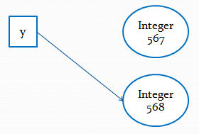
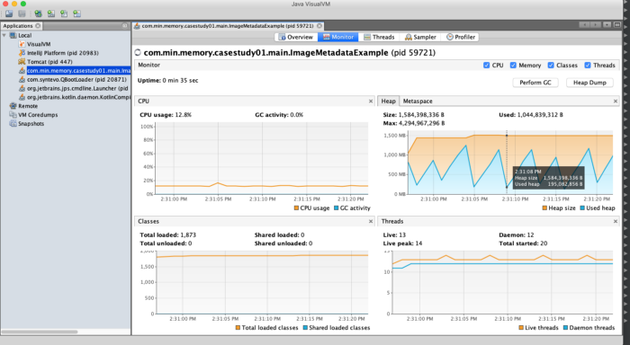
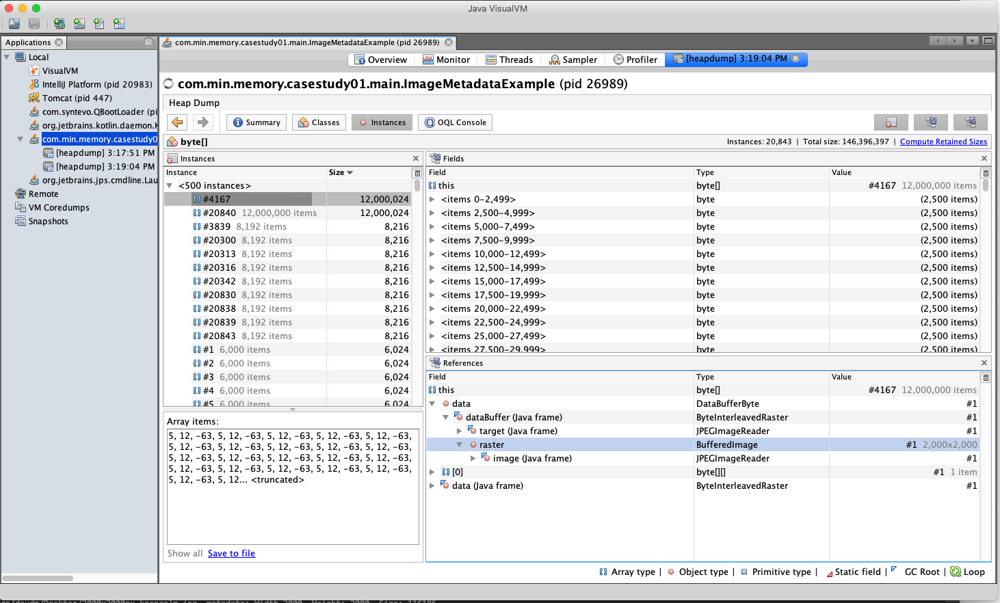
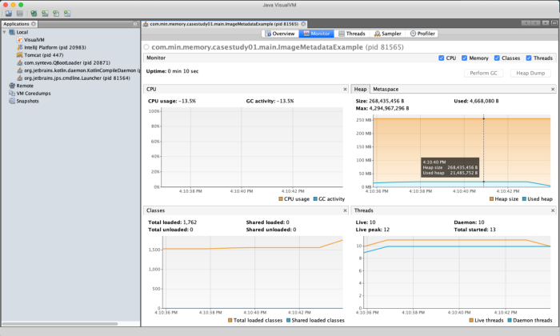
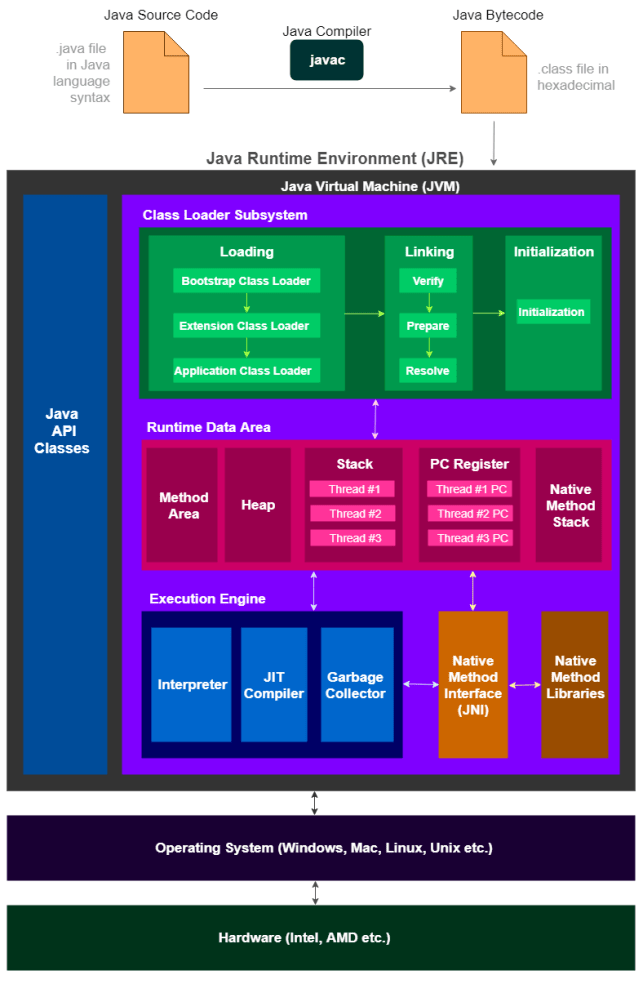
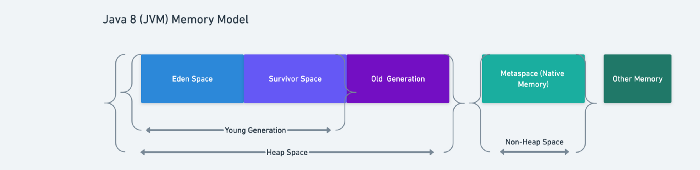
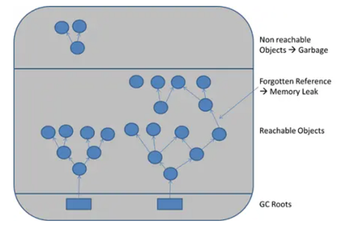
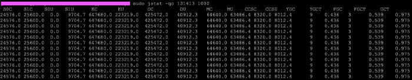

StringBuffer и StringBuilder
Объекты String являются неизменяемыми, поэтому все операции, которые изменяют строки, фактически приводят к созданию новой строки, что сказывается на производительности приложения. Для решения этой проблемы, чтобы работа со строками проходила с меньшими издержками в Java были добавлены классы StringBuffer и StringBuilder. По сути они напоминает расширяемую строку, которую можно изменять без ущерба для производительности.
Эти классы похожи, практически двойники, они имеют одинаковые конструкторы, одни и те же методы, которые одинаково используются. Единственное их различие состоит в том, что класс StringBuffer синхронизированный и потокобезопасный. То есть класс StringBuffer удобнее использовать в многопоточных приложениях, где объект данного класса может меняться в различных потоках. Если же речь о многопоточных приложениях не идет, то лучше использовать класс StringBuilder, который не потокобезопасный, но при этом работает быстрее, чем StringBuffer в однопоточных приложениях.
StringBuffer определяет четыре конструктора:
StringBuffer()
StringBuffer(int capacity)
StringBuffer(String str)
StringBuffer(CharSequence chars)Аналогичные конструкторы определяет StringBuilder:
StringBuilder()
StringBuilder(int capacity)
StringBuilder(String str)
StringBuilder(CharSequence chars)Рассмотрим работу этих классов на примере функциональности StringBuffer.
При всех операциях со строками StringBuffer / StringBuilder перераспределяет выделенную память. И чтобы избежать слишком частого перераспределения памяти, StringBuffer/StringBuilder заранее резервирует некоторую область памяти, которая может использоваться. Конструктор без параметров резервирует в памяти место для 16 символов. Если мы хотим, чтобы количество символов было иным, то мы можем применить второй конструктор, который в качестве параметра принимает количество символов.
Третий и четвертый конструкторы обоих классов принимают строку и набор символов, при этом резервируя память для дополнительных 16 символов.
С помощью метода capacity() мы можем получить количество символов, для которых зарезервирована память. А с помощью метода ensureCapacity() изменить минимальную емкость буфера символов:
String str = "Java";
StringBuffer strBuffer = new StringBuffer(str);
System.out.println("Емкость: " + strBuffer.capacity()); // 20
strBuffer.ensureCapacity(32);
System.out.println("Емкость: " + strBuffer.capacity()); // 42
System.out.println("Длина: " + strBuffer.length()); // 4Так как в самом начале StringBuffer инициализируется строкой "Java", то его емкость составляет 4 + 16 = 20 символов. Затем мы увеличиваем емкость буфера с помощью вызова strBuffer.ensureCapacity(32) повышаем минимальную емкость буфера до 32 символов. Однако финальная емкость может отличаться в большую сторону. Так, в данном случае я получаю емкость не 32 и не 32 + 4 = 36, а 42 символа. Дело в том, что в целях повышения эффективности Java может дополнительно выделять память.
Но в любом случае вне зависимости от емкости длина строки, которую можно получить с помощью метода length(), в StringBuffer остается прежней - 4 символа (так как в "Java" 4 символа).
Чтобы получить строку, которая хранится в StringBuffer, мы можем использовать стандартный метод toString():
String str = "Java";
StringBuffer strBuffer = new StringBuffer(str);
System.out.println(strBuffer.toString()); // JavaПо всем своим операциям StringBuffer и StringBuilder напоминают класс String.
charAt() и setCharAt()
Метод charAt() получает, а метод setCharAt() устанавливает символ по определенному индексу:
StringBuffer strBuffer = new StringBuffer("Java");
char c = strBuffer.charAt(0); // J
System.out.println(c);
strBuffer.setCharAt(0, 'c');
System.out.println(strBuffer.toString()); // cavagetChars()
Метод getChars() получает набор символов между определенными индексами:
StringBuffer strBuffer = new StringBuffer("world");
int startIndex = 1;
int endIndex = 4;
char[] buffer = new char[endIndex-startIndex];
strBuffer.getChars(startIndex, endIndex, buffer, 0);
System.out.println(buffer); // orlappend()
Метод append() добавляет подстроку в конец StringBuffer:
StringBuffer strBuffer = new StringBuffer("hello");
strBuffer.append(" world");
System.out.println(strBuffer.toString()); // hello worldinsert()
Метод insert() добавляет строку или символ по определенному индексу в StringBuffer:
StringBuffer strBuffer = new StringBuffer("word");
strBuffer.insert(3, 'l');
System.out.println(strBuffer.toString()); // world
strBuffer.insert(0, "s");
System.out.println(strBuffer.toString()); // sworlddelete() и deleteCharAt()
Метод delete() удаляет все символы с определенного индекса о определенной позиции, а метод deleteCharAt() удаляет один символ по определенному индексу:
StringBuffer strBuffer = new StringBuffer("assembler");
strBuffer.delete(0,2);
System.out.println(strBuffer.toString()); // sembler
strBuffer.deleteCharAt(6);
System.out.println(strBuffer.toString()); // semblesubstring()
Метод substring() обрезает строку с определенного индекса до конца, либо до определенного индекса:
StringBuffer strBuffer = new StringBuffer("hello java!");
String str1 = strBuffer.substring(6); // обрезка строки с 6 символа до конца
System.out.println(str1); //java!
String str2 = strBuffer.substring(3, 9); // обрезка строки с 3 по 9 символ
System.out.println(str2); //lo javsetLength()
Для изменения длины StringBuffer (не емкости буфера символов) применяется метод setLength(). Если StringBuffer увеличивается, то его строка просто дополняется в конце пустыми символами, если уменьшается - то строка по сути обрезается:
StringBuffer strBuffer = new StringBuffer("hello");
strBuffer.setLength(10);
System.out.println(strBuffer.toString()); // "hello "
strBuffer.setLength(4);
System.out.println(strBuffer.toString()); // "hell"replace()
Для замены подстроки между определенными позициями в StringBuffer на другую подстроку применяется метод replace():
StringBuffer strBuffer = new StringBuffer("hello world!");
strBuffer.replace(6, 11, "java");
System.out.println(strBuffer.toString()); // hello java!Первый параметр метода replace() указывает, с какой позиции надо начать замену, второй параметр - до какой позиции, а третий параметр указывает на подстроку замены.
reverse()
Метод reverse() меняет порядок в StringBuffer на обратный:
StringBuffer strBuffer = new StringBuffer("assembler");
strBuffer.reverse();
System.out.println(strBuffer.toString()); // relbmessaФорматирование строк
Класс Formatter
Базовой частью поддержки создания форматированного вывода в языке Java служит класс Formatter, включенный в пакет java.util. Он обеспечивает преобразования формата (format conversions) позволяющие выводить числа, строки и время и даты практически в любом понравившемся вам формате.
В классе Formatter объявлен метод format(), который преобразует переданные в него параметры в строку заданного формата и сохраняет в объекте типа Formatter.
Рассмотрим использование класса Formatter:
import java.util.Formatter;
public class SimpleFormatString {
public static void main(String[] args) {
Formatter f = new Formatter();
f.format("This %s is about %n%S %c", "book", "java", '8');
System.out.print(f);
}
}где %s называется спецификатором формата.
Следующий пример использует класс Formatter для отображения дробного числа:
import java.util.Formatter;
public class FormatDemo1 {
public static void main(String[] args) {
double x = 1000.0 / 3.0;
System.out.println("Строка без форматирования: " + x);
Formatter formatter = new Formatter();
formatter.format("Строка c форматированием: %.2f%n", x);
formatter.format("Строка c форматированием: %8.2f%n", x);
formatter.format("Строка c форматированием: %16.2f%n", x);
System.out.println(formatter);
}
}Метод format() классов String, PrintStream и PrintWriter
Аналогичный метод format() объявлен у классов PrintStream и PrintWriter. System.out это статическая переменная типа PrintStream.
В Java 5 для классов PrintStream и PrintWriter добавлен метод printf(). Методы printf() и format() автоматически используют класс Formatter:
public class FormatDemo4 {
public static void main(String[] args) {
System.out.printf("Строка c форматированием: %.2f%n", 1000.0 / 3.0);
System.out.format("%s, в следующем году вам будет %d", "Джон", 23);
}
}С помощью метода String.format() тоже возможно форматирование:
public class StringFormatDemo {
public static void main(String[] args) {
String str = String.format("Строка c форматированием: %16.2f", 1000.0 / 3.0);
System.out.println(str);
}
}Спецификаторы формата
-
%aШестнадцатеричное значение с плавающей точкой -
%bЛогическое (булево) значение аргумента -
%cСимвольное представление аргумента -
%dДесятичное целое значение аргумента -
%hХэш-код аргумента -
%eЭкспоненциальное представление аргумента -
%fДесятичное значение с плавающей точкой -
%gВыбирает более короткое представление из двух:%еили%f -
%oВосьмеричное целое значение аргумента -
%nВставка символа новой строки -
%sСтроковое представление аргумента -
%tВремя и дата -
%xШестнадцатеричное целое значение аргумента -
%%Вставка знака%
Флаги формата
-
-выравнивание влево -
#изменяет формат преобразования -
0выводит значение, дополненное нулями вместо пробелов. Применим только к числам -
` ` положительные числа предваряются пробелом
-
+положительные числа предваряются знаком +. Применим только к числам -
,числовые значения включают разделители групп. Применим только к числам -
(отрицательные числовые значения заключаются в скобки. Применим только к числам
Рассмотрим пример использования флагов:
public class FormatterDemo2 {
public static void main(String[] args) {
System.out.printf("%,.2f%n", 10000.0 / 3.0);
System.out.printf("%, (.2f%n", -10000.0 / 3.0);
System.out.printf("%09.2f%n", 10000.0 / 3.0);
}
}В строке, определяющей формат, может задаваться индекс форматируемого параметра. Индекс должен следовать непосредственно за символом % и завершаться знаком $:
public class FormatterDemo3 {
public static void main(String[] args) {
System.out.printf("Hello %1$s!%n%1$s, how are you?%n"
+ "Welcome to the site %2$s",
"John", "www.site.com");
}
}Общий синтаксис можно описать так:
%[аргумент_индекс][флаги][ширина][.точность]символ_преобразованияПеречисления
Кроме отдельных примитивных типов данных и классов в Java есть такой тип как enum или перечисление. Перечисления представляют набор логически связанных констант. Объявление перечисления происходит с помощью оператора enum, после которого идет название перечисления. Затем идет список элементов перечисления через запятую:
enum Day {
MONDAY,
TUESDAY,
WEDNESDAY,
THURSDAY,
FRIDAY,
SATURDAY,
SUNDAY
}Перечисление фактически представляет новый тип, поэтому мы можем определить переменную данного типа и использовать ее:
public class Program {
public static void main(String[] args) {
Day current = Day.MONDAY;
System.out.println(current); // MONDAY
}
}
enum Day {
MONDAY,
TUESDAY,
WEDNESDAY,
THURSDAY,
FRIDAY,
SATURDAY,
SUNDAY
}Перечисления могут использоваться в классах для хранения данных:
public class Program {
public static void main(String[] args) {
Book b1 = new Book("War and Peace", "L. Tolstoy", Type.BELLETRE);
System.out.printf("Book '%s' has a type %s", b1.name, b1.bookType);
switch (b1.bookType) {
case BELLETRE:
System.out.println("Belletre");
break;
case SCIENCE:
System.out.println("Science");
break;
case SCIENCE_FICTION:
System.out.println("Science fiction");
break;
case PHANTASY:
System.out.println("Phantasy");
break;
}
}
}
class Book {
String name;
Type bookType;
String author;
Book(String name, String author, Type type) {
bookType = type;
this.name = name;
this.author = author;
}
}
enum Type {
SCIENCE,
BELLETRE,
PHANTASY,
SCIENCE_FICTION
}Само перечисление объявлено вне класса, оно содержит четыре жанра книг. Класс Book кроме обычных переменных содержит также переменную типа нашего перечисления. В конструкторе мы ее также можем присвоить, как и обычные поля класса.
С помощью конструкции switch..case можно проверить принадлежность значения bookType определенной константе перечисления.
Методы перечислений
Каждое перечисление имеет статический метод values(). Он возвращает массив всех констант перечисления:
public class Program {
public static void main(String[] args) {
Type[] types = Type.values();
for (Type s : types) {
System.out.println(s);
}
}
}
enum Type {
SCIENCE,
BELLETRE,
PHANTASY,
SCIENCE_FICTION
}Метод ordinal() возвращает порядковый номер определенной константы (нумерация начинается с 0):
System.out.println(Type.BELLETRE.ordinal()); // 1Конструкторы, поля и методы перечисления
Перечисления, как и обычные классы, могут определять конструкторы, поля и методы. Например:
public class Program {
public static void main(String[] args) {
System.out.println(Color.RED.getCode()); // #FF0000
System.out.println(Color.GREEN.getCode()); // #00FF00
}
}
enum Color {
RED("#FF0000"), BLUE("#0000FF"), GREEN("#00FF00");
private String code;
Color(String code) {
this.code = code;
}
public String getCode() {
return code;
}
}Перечисление Color определяет приватное поле code для хранения кода цвета, а с помощью метода getCode() оно возвращается. Через конструктор передается для него значение. Следует отметить, что конструктор по умолчанию приватный, то есть имеет модификатор private. Любой другой модификатор будет считаться ошибкой. Поэтому создать константы перечисления с помощью конструктора мы можем только внутри перечисления.
Также можно определять методы для отдельных констант:
public class Program {
public static void main(String[] args) {
Operation op = Operation.SUM;
System.out.println(op.action(10, 4)); // 14
op = Operation.MULTIPLY;
System.out.println(op.action(6, 4)); // 24
}
}
enum Operation {
SUM {
public int action(int x, int y) {
return x + y;
}
},
SUBTRACT {
public int action(int x, int y) {
return x - y;
}
},
MULTIPLY {
public int action(int x, int y) {
return x * y;
}
};
public abstract int action(int x, int y);
}Класс Object
Хотя мы можем создать обычный класс, который не является наследником, но фактически все классы наследуют от класса Object. Все остальные классы, даже те, которые мы добавляем в свой проект, являются неявно производными от класса Object. Поэтому все типы и классы могут реализовать те методы, которые определены в классе Object.
hashCode()
Что такое хеш-код?
Если очень просто, то (хеш-код) — это число. Если более точно, то это битовая строка фиксированной длины, полученная из массива произвольной длины.
Выполним следующий код:
public class Main {
public static void main(String[] args) {
Object object = new Object();
int hCode;
hCode = object.hashCode();
System.out.println(hCode);
}
}В результате выполнения программы в консоль выведется целое 10-ти значное число. Это число и есть битовая строка фиксированной длины. В java она представлена в виде числа примитивного типа int, который равен 4-м байтам, и может помещать числа от -2_147_483_648 до 2_147_483_647. На данном этапе важно понимать, что хеш-код это число, у которого есть свой предел, который для java ограничен примитивным целочисленным типом int.
Вторая часть объяснения гласит: полученная из массива произвольной длины. Под массивом произвольной длины будет понимать объект. В примере выше в качестве массива произвольной длины выступает объект типа Object.
В итоге в терминах Java, хеш-код — это целочисленный результат работы метода, которому в качестве входного параметра передан объект.
Этот метод реализован таким образом, что для одного и того-же входного объекта, хеш-код всегда будет одинаковым. Следует понимать, что множество возможных хеш-кодов ограничено примитивным типом int, а множество объектов ограничено только нашей фантазией. Отсюда следует утверждение: Множество объектов мощнее множества хеш-кодов. Из-за этого ограничения, вполне возможна ситуация, что хеш-коды разных объектов могут совпасть.
Здесь главное понять, что:
-
Если хеш-коды разные, то и входные объекты гарантированно будут разные.
-
Если хеш-коды равны, то входные объекты не всегда равны.
Ситуация, когда у разных объектов одинаковые хеш-коды называется — коллизией. Вероятность возникновения коллизии зависит от используемого алгоритма генерации хеш-кода.
hashCode()
Person tom = new Person("Tom");
System.out.println(tom.hashCode()); // 2036368507Но мы можем задать свой алгоритм определения хэш-кода объекта:
class Person {
private String name;
public Person(String name) {
this.name = name;
}
@Override
public int hashCode(){
return 11 * name.hashCode() + 7;
}
}Подведём итог
Одинаковые объекты — это объекты одного класса с одинаковым содержимым полей.
-
Для одного и того-же объекта, хеш-код всегда будет одинаковым

-
Если объекты одинаковые, то и хеш-коды будут одинаковые, но не наоборот.

-
Если хеш-коды равны, то входные объекты не всегда равны (коллизия).
-
Если хеш-коды разные, то и объекты гарантированно будут разные.
Понятие эквивалентности. Метод equals()
В java, каждый вызов оператора new порождает новый объект в памяти. Для иллюстрации создадим какой-нибудь класс, пускай он будет называться BlackBox.
Выполним следующий код:
public class BlackBox {
int varA;
int varB;
BlackBox(int varA, int varB){
this.varA = varA;
this.varB = varB;
}
}Создадим класс для демонстрации BlackBox.
public class DemoBlackBox {
public static void main(String[] args) {
BlackBox object1 = new BlackBox(5, 10);
BlackBox object2 = new BlackBox(5, 10);
}
}В этом примере, в памяти создастся два объекта.

Но, как вы уже обратили внимание, содержимое этих объектов одинаково, то есть эквивалентно. Для проверки эквивалентности в классе Object существует метод equals(), который сравнивает содержимое объектов и выводит значение типа boolean true, если содержимое эквивалентно, и false — если нет.
object1.equals(object2); // должно быть true, поскольку содержимое объектов эквивалентноЭквивалентность и хеш-код тесно связанны между собой, поскольку хеш-код вычисляется на основании содержимого объекта (значения полей) и если у двух объектов одного и того же класса содержимое одинаковое, то и хеш-коды должны быть одинаковые.
Иными словами:
object1.equals(object2); // должно быть true
object1.hashCode() == object2.hashCode(); // должно быть true"Должно быть", потому что если вы выполните предыдущий пример, то на самом деле результатом выполнения всех операций будет false. Для пояснения причин, заглянем в исходные коды класса Object.
Пример
Метод equals() сравнивает два объекта на равенство:
public class Program {
public static void main(String[] args) {
Person tom = new Person("Tom");
Person bob = new Person("Bob");
System.out.println(tom.equals(bob)); // false
Person tom2 = new Person("Tom");
System.out.println(tom.equals(tom2)); // true
}
}class Person {
private String name;
public Person(String name) {
this.name = name;
}
@Override
public boolean equals(Object obj) {
if (obj instanceof Person) {
Person p = (Person) obj;
return (this.name == p.name);
}
return false;
}
}Метод equals() принимает в качестве параметр объект любого типа, который мы затем приводим к текущему, если они являются объектами одного класса.
Оператор instanceof позволяет выяснить, является ли переданный в качестве параметра объект объектом определенного класса, в данном случае класса Person.
Затем сравниваем по именам. Если они совпадают, возвращаем true, что будет говорить, что объекты равны.
Если объекты принадлежат к разным классам, то их сравнение не имеет смысла, и возвращается значение false.
Класс Object
Как известно, все java-классы наследуются от класса Object. В этом классе уже определены методы hashCode() и equals().
Определяя свой класс, вы автоматически наследуете все методы класса Object. И в ситуации, когда в вашем классе не переопределены (overriding) hashCode() и equals(), то используется их реализация из Object.
Рассмотрим исходный код метода equals() в классе Object.
public boolean equals(Object obj) {
return (this == obj);
}При сравнении объектов, операция == вернет true лишь в одном случае — когда ссылки указывают на один и тот-же объект. В данном случае не учитывается содержимое полей.
Выполнив приведённый ниже код, equals() вернет true.
public class DemoBlackBox {
public static void main(String[] args) {
BlackBox object3 = new BlackBox(5, 10);
BlackBox object4 = object3; // Переменная object4 ссылается на
// тот-же объект что и переменная object3
object3.equals(object4); // true
}
}Теперь понято, почему Object.equals() работает не так как нужно, ведь он сравнивает ссылки, а не содержимое объектов.

Далее на очереди hashCode(), который тоже работает не так как полагается.
Заглянем в исходный код метода hashCode() в классе Object:
public native int hashCode();Вот собственно и вся реализация. Ключевое слово native означает, что реализация данного метода выполнена на другом языке, например на C, C или *ассемблере*. Конкретный `native int hashCode()` реализован на C, вот исходники функции get_next_hash.
При вычислении хэш-кода для объектов класса Object по умолчанию используется Park-Miller RNG алгоритм. В основу работы данного алгоритма положен генератор случайных чисел. Это означает, что при каждом запуске программы у объекта будет разный хэш-код.
Получается, что используя реализацию метода hashCode() от класса Object, мы при каждом создании объекта класса new BlackBox(), будем получать разные хеш-коды. Мало того, перезапуская программу, мы будем получать абсолютно разные значения, поскольку это просто случайное число.
Но, как мы помним, должно выполняться правило: если у двух объектов одного и того же класса содержимое одинаковое, то и хеш-коды должны быть одинаковые. Поэтому, при создании пользовательского класса, принято переопределять методы hashCode() и equals() таким образом, что бы учитывались поля объекта.
Это можно сделать вручную либо воспользовавшись средствами генерации исходного кода в IDE. Например, в Eclipse это Source → Generate hashCode() and equals()…
В итоге класс BlackBox приобретает вид:
public class BlackBox {
int varA;
int varB;
BlackBox(int varA, int varB) {
this.varA = varA;
this.varB = varB;
}
@Override
public int hashCode() {
final int prime = 31;
int result = 1;
result = prime * result + varA;
result = prime * result + varB;
return result;
}
@Override
public boolean equals(Object obj) {
if (this == obj)
return true;
if (obj == null)
return false;
if (getClass() != obj.getClass())
return false;
BlackBox other = (BlackBox) obj;
if (varA != other.varA)
return false;
if (varB != other.varB)
return false;
return true;
}
}Теперь методы hashCode() и equals() работают корректно и учитывают содержимое полей объекта:
object1.equals(object2); // true
object1.hashCode() == object2.hashCode(); // trueПоэтому создавая пользовательский класс, нужно переопределять методы hashCode() и equals(), что бы они корректно работали и учитывали данные объекта. Кроме того, если оставить реализацию из Object, то при использовании java.util.HashMap возникнут проблемы, поскольку HashMap активно используют hashCode() и equals() в своей работе.
toString()
Метод toString() служит для получения представления данного объекта в виде строки. При попытке вывести строковое представления какого-нибудь объекта, как правило, будет выводиться полное имя класса. Например:
public class Program {
public static void main(String[] args) {
Person tom = new Person("Tom");
System.out.println(tom.toString()); // Будет выводить что-то наподобие Person@7960847b
}
}class Person {
private String name;
public Person(String name) {
this.name = name;
}
}Полученное мной значение (в данном случае Person@7960847b) вряд ли может служить хорошим строковым описанием объекта. Поэтому метод toString() нередко переопределяют. Например:
public class Program {
public static void main(String[] args) {
Person tom = new Person("Tom");
System.out.println(tom.toString()); // Person Tom
}
}
class Person {
private String name;
public Person(String name) {
this.name = name;
}
@Override
public String toString() {
return "Person " + name;
}
}getClass()
Метод getClass() позволяет получить тип данного объекта:
Person tom = new Person("Tom");
System.out.println(tom.getClass()); // class PersonСсылочные типы и клонирование объектов
При работе с объектами классов надо учитывать, что они все представляют ссылочные типы, то есть указывают на какой-то объект, расположенный в памяти. Чтобы понять возможные трудности, с которыми мы можем столкнуться, рассмотрим пример:
public class Program {
public static void main(String[] args) {
Person tom = new Person("Tom", 23);
tom.display(); // Person Tom
Person bob = tom;
bob.setName("Bob");
tom.display(); // Person Bob
}
}
class Person {
private String name;
private int age;
Person(String name, int age) {
this.name = name;
this.age = age;
}
void setName(String name) {
this.name = name;
}
void setAge(int age) {
this.age = age;
}
void display() {
System.out.printf("Person Name: %s \n", name);
}
}Здесь создаем два объекта Person и один присваиваем другому. Но, несмотря на то, что мы изменяем только объект bob, вместе с ним изменяется и объект tom. Потому что после присвоения они указывают на одну и ту же область в памяти, где собственно данные об объекте Person и его полях и хранятся.
Чтобы избежать этой проблемы, необходимо создать отдельный объект для переменной bob, например, с помощью метода clone:
class Person implements Cloneable {
private String name;
private int age;
Person(String name, int age) {
this.name = name;
this.age = age;
}
void setName(String name) {
this.name = name;
}
void setAge(int age) {
this.age = age;
}
void display() {
System.out.printf("Person %s \n", name);
}
public Person clone() throws CloneNotSupportedException {
return (Person) super.clone();
}
}Для реализации клонирования класс Person должен применить интерфейс Cloneable, который определяет метод clone(). Реализация этого метода просто возвращает вызов метода clone() для родительского класса - то есть класса Object с преобразованием к типу Person.
Кроме того, на случай если класс не поддерживает клонирование, метод должен выбрасывать исключение CloneNotSupportedException, что определяется с помощью оператора throws.
Затем с помощью вызова этого метода мы можем осуществить копирование:
try {
Person tom = new Person("Tom", 23);
Person bob = tom.clone();
bob.setName("Bob");
tom.display(); // Person Tom
} catch (CloneNotSupportedException ex) {
System.out.println("Clonable not implemented");
}Однако данный способ осуществляет неполное копирование и подойдет, если клонируемый объект не содержит сложных объектов. Например, пусть класс Book имеет следующее определение:
class Book implements Cloneable {
private String name;
private Author author;
public void setName(String n) {
name = n;
}
public String getName() {
return name;
}
public void setAuthor(String n) {
author.setName(n);
}
public String getAuthor() {
return author.getName();
}
Book(String name, String author) {
this.name = name;
this.author = new Author(author);
}
public String toString() {
return "Книга '" + name + "' (автор " + author + ")";
}
public Book clone() throws CloneNotSupportedException {
return (Book) super.clone();
}
}
class Author {
private String name;
public void setName(String n) {
name = n;
}
public String getName() {
return name;
}
public Author(String name) {
this.name = name;
}
}Если мы попробуем изменить автора книги, нас последует неудача:
try {
Book book = new Book("War and Peace", "Leo Tolstoy");
Book book2 = book.clone();
book2.setAuthor("Ivan Turgenev");
System.out.println(book.getAuthor());
} catch (CloneNotSupportedException ex) {
System.out.println("Cloneable not implemented");
}В этом случае, хотя переменные book и book2 будут указывать на разные объекты в памяти, но эти объекты при этом будут указывать на один объект Author.
И в этом случае нам необходимо выполнить полное копирование. Для этого, во-первых, надо определить метод клонирования у класса Author:
class Author implements Cloneable {
// остальной код класса
public Author clone() throws CloneNotSupportedException {
return (Author) super.clone();
}
}И затем исправим метод clone() в классе Book следующим образом:
public Book clone() throws CloneNotSupportedException {
Book newBook = (Book) super.clone();
newBook.author = (Author) author.clone();
return newBook;
}Wrapper Classes
Wrapper Classes
Очень часто необходимо создать класс, основное назначение которого содержать в себе какое-то примитивное значение. Например, как мы увидим в следующих занятиях, обобщенные классы и в частности коллекции работают только с объектами. Поэтому, чтобы каждый разработчик не изобретал велосипед, в Java уже добавлены такие классы, которые называются Wrapper Classes (оболочки типов/классы обертки/wrappers).
К оболочкам типов относятся классы Double, Float, Long, Integer, Short, Byte, Character, Boolean, Void.
Для каждого примитивного значения и ключевого слова void есть свой класс-двойник.
Имя класса, как вы видите, совпадает с именем примитивного значения.
Исключения составляют класс Integer (примитивный тип int) и класс Character (примитивный тип char).
Кроме содержания в себе значения, классы оболочки предоставляют обширный ряд методов.
Объекты классов оболочек неизменяемые (immutable). Это значит, что объект не может быть изменен.
Все классы-обертки числовых типов имеют переопределенный метод equals(Object), сравнивающий примитивные значения объектов.
Конструкторы оболочек
В следующей таблицы для каждого класса оболочки указан соответствующий примитивный тип и варианты конструкторов.
| Примитивный тип | Оболочка | Аргументы конструктора |
|---|---|---|
|
|
|
|
|
|
|
|
|
|
|
|
|
|
|
|
|
|
|
|
|
|
|
|
Как вы видите каждый класс имеет два конструктора, которые принимаю значения типа:
-
соответствующего примитива
-
String
Исключения: класс Character, у которого только один конструктор с аргументом char и класс Float, объявляющий три конструктора - для значения float, String и еще double.
Рассмотрим варианты вызова конструкторов на примере.
Чтобы создать объект класса Integer, передаем в конструктор либо значение типа int либо String.
Integer i1 = new Integer(42);
Integer i2 = new Integer("42");
Float f1 = new Float(3.14f);
Float f2 = new Float("3.14f");
Character c1 = new Character('c');Если передаваемая в конструктор строка не содержит числового значения, то выбросится исключение NumberFormatException.
При вызове конструктора с аргументом String класса Boolean, не обязательно передавать строки true или false.
Если аргумент содержит любую другую строку, просто будет создан объект, содержащий значение false.
Исключение выброшено не будет:
public class WrapperDemo1 {
public static void main(String[] args) {
Boolean boolean1 = new Boolean(true);
Boolean boolean2 = new Boolean("Some String");
System.out.println(boolean2);
}
}Методы классов оболочек
Как уже было сказано, классы оболочки содержат обширный ряд методов. Рассмотрим их.
Методы valueOf()
Метод valueOf() предоставляет второй способ создания объектов оболочек.
Метод перегруженный, для каждого класса существует два варианта - один принимает на вход значение соответствующего типа, а второй - значение типа String.
Так же как и с конструкторами, передаваемая строка должна содержать числовое значение.
Исключение составляет опять же класс Character - в нем объявлен только один метод, принимающий на вход значение char.
И в целочисленные классы Byte, Short, Integer, Long добавлен еще один метод, в который можно передать строку, содержащую число в любой системе исчисления.
Вторым параметром вы указываете саму систему исчисления.
В следующем примере показано использование всех трех вариантов для создания объектов класса Integer:
public class WrapperValueOf {
public static void main(String[] args) {
Integer integer1 = Integer.valueOf("6");
Integer integer2 = Integer.valueOf(6);
// преобразовывает 101011 к 43
Integer integer3 = Integer.valueOf("101011", 2);
System.out.println(integer1);
System.out.println(integer2);
System.out.println(integer3);
}
}Методы parse()
В каждом классе оболочке содержатся методы, позволяющие преобразовывать строку в соответствующее примитивное значение.
В классе Double - это метод parseDouble(), в классе Long - parseLong() и так далее.
Разница с методом valueOf() состоит в том, что метод valueOf() возвращает объект, а parse() - примитивное значение.
Также в целочисленные классы Byte, Short, Integer, Long добавлен метод, в который можно передать строку, содержащую число в любой системе исчисления.
Вторым параметром вы указываете саму систему исчисления.
Следующий пример показывает использование метода parseLong():
public class WrapperDemo3 {
public static void main(String[] args) {
Long long1 = Long.valueOf("45");
long long2 = Long.parseLong("67");
long long3 = Long.parseLong("101010", 2);
System.out.println("long1 = " + long1);
System.out.println("long2 = " + long2);
System.out.println("long3 = " + long3);
}
}Методы toString()
Все типы-оболочки переопределяют toString().
Этот метод возвращает читабельную для человека форму значения, содержащегося в оболочке.
Это позволяет выводить значение, передавая объект оболочки типа методу println():
Double double1 = Double.valueOf("4.6");
System.out.println(double1);Также все числовые оболочки типов предоставляют статический метод toString(), на вход которого передается примитивное значение.
Метод возвращает значение String:
String string1 = Double.toString(3.14);Integer и Long предоставляют третий вариант toString() метода, позволяющий представить число в любой системе исчисления.
Он статический, первый аргумент – примитивный тип, второй - основание системы счисления:
String string2 = Long.toString(254, 16); // string2 = "fe"Методы toHexString(), toOctalString(), toBinaryString()
Integer и Long позволяют преобразовывать числа из десятичной системы исчисления к шестнадцатеричной, восьмеричной и двоичной.
Например:
public class WrapperToXString {
public static void main(String[] args) {
String string1 = Integer.toHexString(254);
System.out.println("254 в 16-ой системе = " + string1);
String string2 = Long.toOctalString(254);
System.out.println("254 в 8-ой системе = " + string2);
String string3 = Long.toBinaryString(254);
System.out.println("254 в 2-ой системе = " + string3);
}
}В классы Double и Float добавлен только метод toHexString().
Класс Number
Все оболочки числовых типов наследуют абстрактный класс Number. Number объявляет методы, которые возвращают значение объекта в каждом из различных числовых форматов.

Пример приведения типов
public class WrapperDemo2 {
public static void main(String[] args) {
Integer iOb = new Integer(1000);
System.out.println(iOb.byteValue());
System.out.println(iOb.shortValue());
System.out.println(iOb.intValue());
System.out.println(iOb.longValue());
System.out.println(iOb.floatValue());
System.out.println(iOb.doubleValue());
}
}Статические константы классов оболочек
Каждый класс оболочка содержит статические константы, содержащие максимальное и минимальное значения для данного типа.
Например в классе Integer есть константы Integer.MIN_VALUE – минимальное int значение и Integer.MAX_VALUE – максимальное int значение.
Классы-обертки числовых типов Float и Double, помимо описанного для целочисленных примитивных типов, дополнительно содержат определения следующих констант:
-
NEGATIVE_INFINITY– отрицательная бесконечность -
POSITIVE_INFINITY– положительная бесконечность -
NaN– не числовое значение (расшифровывается как Not a Number)
Следующий пример демонстрирует использование трех последних переменных.
При делении на ноль возникает ошибка - на ноль делить нельзя.
Чтобы этого не происходило, и ввели переменные NEGATIVE_INFINITY и POSITIVE_INFINITY.
Результат умножения бесконечности на ноль - это значение NaN:
public class InfinityDemo {
public static void main(String[] args) {
int a = 7;
double b = 0.0;
double c = -0.0;
double g = Double.NEGATIVE_INFINITY;
System.out.println("7 / 0.0 = " + a / b);
System.out.println("7 / -0.0 = " + a / c);
System.out.println("0.0 == -0.0 = " + (b == c));
System.out.println("-Infinity * 0 = " + g * 0);
}
}Результат выполнения кода:
7 / 0.0 = Infinity
7 / -0.0 = -Infinity
0.0 == -0.0 = true
-Infinity * 0 = NaNAutoboxing and unboxing
Autoboxing and unboxing (авто-упаковка и распаковка) — это процесс преобразования примитивных типов в объектные и наоборот. Весь процесс выполняется автоматически средой выполнения Java (JRE). Эта возможность доступна в Java версии 5 и выше.
public class AutoBoxDemo1 {
public static void main(String[] args) {
Integer iOb = 100; // упаковать значение int
int i = iOb; // распаковать
System.out.println(i + " " + iOb);
}
}Autoboxing происходит при прямом присвоении примитива классу-обертке (с помощью оператора =), либо при передаче примитива в параметры метода.
Unboxing происходит при прямом присвоении классу-обертке примитива.
Компилятор использует метод valueOf() для упаковки, а методы intValue(), doubleValue() и так далее, для распаковки.
Autoboxing в классы-обертки могут быть подвергнуты как переменные примитивных типов, так и литералы:
Integer iOb1 = 100;
int i = 200;
Integer iOb2 = i;Autoboxing переменных примитивных типов требует точного соответствия типа исходного примитива — типу класса-обертки.
Например, попытка autoboxing переменную типа byte в Short, без предварительного явного приведения byte в short вызовет ошибку компиляции:
byte b = 4;
// Short s1 = b;
Short s2 = (short) b;Автоупаковку можно использовать при вызове метода:
public class AutoBoxAndMethods {
static int someMethod(Integer value) {
return value;
}
public static void main(String[] args) {
Integer iOb = someMethod(100);
System.out.println(iOb);
}
}Внутри выражения числовой объект автоматически распаковывается. Выходной результат выражения при необходимости упаковывается заново:
public class AutoBoxAndOperations {
public static void main(String[] args) {
Integer iOb1, iOb2;
int i;
iOb1 = 100;
iOb2 = iOb1 + iOb1 / 3;
System.out.println("iOb2 после выражения: " + iOb2);
i = iOb1 + iOb1 / 3;
System.out.println("i после выражения: " + i);
}
}C появлением autoboxing/unboxing стало возможным применять объекты Boolean для управления в операторе if и других циклических конструкциях Java:
public class AutoBoxAndCharacters {
public static void main(String[] args) {
Boolean b = true;
if (b) {
System.out.println("В if тоже можно использовать распаковку.");
}
Character ch = 'x';
char ch2 = ch;
System.out.println("ch2 = " + ch2);
}
}До Java 5 работа с классами обертками была более трудоемкой:
public class AutoBoxDemo2 {
public static void main(String[] args) {
Integer y = new Integer(567);
int x = y.intValue();
x++;
y = new Integer(x);
System.out.println("y = " + y);
}
}Перепишет тот же пример для работы с классами начиная с Java 5:
public class AutoBoxDemo3 {
public static void main(String[] args) {
Integer y = new Integer(567);
y++;
System.out.println("y = " + y);
}
}Объекты классов оболочек неизменяемые
Объекты классов оболочек неизменяемые (immutable):
public class AutoBoxImmutability {
public static void main(String[] args) {
Integer y = 567;
Integer x = y;
// проверяем, что x и y указывают на один объект
System.out.println(y == x);
y++;
System.out.println(x + " " + y);
// проверяем, что x и y указывают на один объект
System.out.println(y == x);
}
}Рассмотрим следующий пример:
Integer y = 567;Переменная y указывает на объект в памяти:

Если мы попытаемся изменить y, у нас создастся еще один объект в памяти, на который теперь и будет указывать y:
Integer y = 567;
y++;
Кэширование объектов классов оболочек
Метод valueOf() не всегда создает новый объект.
Он кэширует следующие значения:
-
Boolean, -
Byte, -
Characterот\u0000до\u007f(7fэто127), -
ShortиIntegerот-128до127.
Если передаваемое значение выходит за эти пределы, то новый объект создается, а если нет, то нет.
Если мы пишем new Integer(), то гарантированно создается новый объект.
Рассмотрим это на следующем примере:
public class AutoBoxDemoCaching {
public static void main(String[] args) {
Integer i1 = 23;
Integer i2 = 23;
System.out.println(i1 == i2);
System.out.println(i1.equals(i2));
Integer i3 = 2300;
Integer i4 = 2300;
System.out.println(i3 == i4);
System.out.println(i3.equals(i4));
}
}Перегрузка с дополнительными факторами
Перегрузка методов усложняется при одновременном использовании следующих факторов:
-
расширение
-
автоупаковка/распаковка
-
аргументы переменной длины
Расширение примитивных типов
При расширение примитивных типов используется наименьший возможный вариант из всех методов.
public class EasyOver {
static void go(int x) {
System.out.print("int ");
}
static void go(long x) {
System.out.print("long ");
}
static void go(double x) {
System.out.print("double ");
}
public static void main(String[] args) {
byte b = 5;
short s = 5;
long l = 5;
float f = 5.0f;
go(b);
go(s);
go(l);
go(f);
}
}Расширение и boxing
Между расширением примитивных типов и boxing всегда выигрывает расширение. Исторически это более старый вид преобразования.
public class AddBoxing {
public static void go(Integer x) {
System.out.println("Integer");
}
public static void go(long x) {
System.out.println("long");
}
public static void main(String[] args) {
int i = 5;
go(i); // какой go() вызовется?
}
}Упаковка и расширение
Можно упаковать, а потом расширить.
Значение типа int может стать Object, через преобразование Integer.
public class BoxAndWiden {
public static void go(Object o) {
Byte b2 = (Byte) o;
System.out.println(b2);
}
public static void main(String[] args) {
byte b = 5;
go(b); // можно ли преобразовать byte в Object?
}
}Расширение и упаковка
Нельзя расширить и упаковать.
Значение типа byte не может стать Long.
Нельзя расширить от одного класса обертки к другой.
(IS-A не работает.)
public class WidenAndBox {
static void go(Long x) {
System.out.println("Long");
}
public static void main(String[] args) {
byte b = 5;
// go(b); // нужно расширить до long и упаковать, что невозможно
}
}Расширение и аргументы переменной длины
Между расширением примитивных типов и var-args всегда проигрывает var-args:
public class AddVarargs { public static void go(int x, int y) { System.out.println("int,int"); }
public static void go(byte... x) {
System.out.println("byte... ");
}
public static void main(String[] args) {
byte b = 5;
go(b, b); // какой go() вызовется?
}
}
Упаковка и аргументы переменной длины
Упаковка и var-args совместимы с перегрузкой методов. Var-args всегда проигрывает:
public class BoxOrVararg {
public static void go(Byte x, Byte y) {
System.out.println("Byte, Byte");
}
public static void go(byte... x) {
System.out.println("byte... ");
}
public static void main(String[] args) {
byte b = 5;
go(b, b); // какой go() вызовется?
}
}Правила перегрузки методов при использовании расширения, упаковки и аргументов переменной длины
Подытожим все правила:
-
При расширение примитивных типов используется наименьший возможный вариант из всех методов.
-
Между расширением примитивных типов и упаковкой всегда выигрывает расширение. Исторически это более старый вид преобразования.
-
Можно упаковать, а потом расширить. (Значение типа
intможет статьObject, через преобразованиеInteger.) -
Нельзя расширить и упаковать. Значение типа
byteне может статьLong. Нельзя расширить от одного класса обертки к другой. (IS-A не работает.) -
Можно комбинировать var-args с расширением или упаковкой. var-args всегда проигрывает.
Введение в лямбда-выражения
Введение
Среди новшеств, которые были привнесены в язык Java с выходом JDK 8, особняком стоят лямбда-выражения. Лямбда-выражение представляет набор инструкций, которые можно выделить в отдельную переменную и затем многократно вызвать в различных местах программы.
Основу лямбда-выражения составляет лямбда-оператор, который представляет стрелку →. Этот оператор разделяет лямбда-выражение на две части: левая часть содержит список параметров выражения, а правая собственно представляет тело лямбда-выражения, где выполняются все действия.
Лямбда-выражение не выполняется само по себе, а образует реализацию метода, определенного в функциональном интерфейсе. При этом важно, что функциональный интерфейс должен содержать только один единственный метод без реализации.
Рассмотрим пример:
public class LambdaApp {
public static void main(String[] args) {
Operationable operation;
operation = (x, y) -> x + y;
int result = operation.calculate(10, 20);
System.out.println(result); //30
}
}
interface Operationable {
int calculate(int x, int y);
}В роли функционального интерфейса выступает интерфейс Operationable, в котором определен один метод без реализации - метод calculate. Данный метод принимает два параметра - целых числа, и возвращает некоторое целое число.
По факту лямбда-выражения являются в некотором роде сокращенной формой внутренних анонимных классов, которые ранее применялись в Java. В частности, предыдущий пример мы можем переписать следующим образом:
public class LambdaApp {
public static void main(String[] args) {
Operationable op = new Operationable() {
public int calculate(int x, int y) {
return x + y;
}
};
int z = op.calculate(20, 10);
System.out.println(z); // 30
}
}
interface Operationable {
int calculate(int x, int y);
}Чтобы объявить и использовать лямбда-выражение, основная программа разбивается на ряд этапов:
-
Определение ссылки на функциональный интерфейс:
Operationable operation;-
Создание лямбда-выражения:
operation = (x, y) -> x + y;-
Использование лямбда-выражения в виде вызова метода интерфейса:
int result = operation.calculate(10, 20);На втором этапе параметры лямбда-выражения соответствуют параметрам единственного метода интерфейса Operationable, а результат соответствует возвращаемому результату метода интерфейса. При этом нам не надо использовать ключевое слово return для возврата результата из лямбда-выражения.
Так, в методе интерфейса оба параметра представляют тип int, значит, в теле лямбда-выражения мы можем применить к ним сложение. Результат сложения также представляет тип int, объект которого возвращается методом интерфейса.
На третьем этапе результатом будет сумма чисел 10 и 20, так как в лямбда-выражении определена операция сложения параметров.
При этом для одного функционального интерфейса мы можем определить множество лямбда-выражений. Например:
Operationable operation1 = (int x, int y)-> x + y;
Operationable operation2 = (int x, int y)-> x - y;
Operationable operation3 = (int x, int y)-> x * y;
System.out.println(operation1.calculate(20, 10)); //30
System.out.println(operation2.calculate(20, 10)); //10
System.out.println(operation3.calculate(20, 10)); //200Отложенное выполнение
Одним из ключевых моментов в использовании лямбд является отложенное выполнение (deferred execution). То есть мы определяем в одном месте программы лямбда-выражение и затем можем его вызывать при необходимости неопределенное количество раз в различных частях программы. Отложенное выполнение может потребоваться, к примеру, в следующих случаях:
-
выполнение кода отдельном потоке
-
выполнение одного и того же кода несколько раз
-
выполнение кода в результате какого-то события
-
выполнение кода только в том случае, когда он действительно необходим и если он необходим
Передача параметров в лямбда-выражение
Параметры лямбда-выражения должны соответствовать по тип параметрам метода из функционального интерфейса. При написании самого лямбда-выражения тип параметров писать необязательно, хотя в принципе это можно сделать, например:
operation = (int x, int y) -> x + y;Если метод не принимает никаких параметров, то пишутся пустые скобки, например:
() -> 30 + 20;Если метод принимает только один параметр, то скобки можно опустить:
n -> n * n;Терминальные лямбда-выражения
Выше рассмотрены лямбда-выражения, которые возвращают определенное значение. Но также могут быть и терминальные лямбды, которые не возвращают никакого значения. Например:
interface Printable {
void print(String s);
}
public class LambdaApp {
public static void main(String[] args) {
Printable printer = s -> System.out.println(s);
printer.print("Hello Java!");
}
}Лямбды и локальные переменные
Лямбда-выражение может использовать переменные, которые объявлены во вне в более общей области видимости - на уровне класса или метода, в котором лямбда-выражение определено. Однако в зависимости от того, как и где определены переменные, могут различаться способы их использования в лямбдах. Рассмотрим первый пример - использования переменных уровня класса:
public class LambdaApp {
static int x = 10;
static int y = 20;
public static void main(String[] args) {
Operation op = () -> {
x = 30;
return x + y;
};
System.out.println(op.calculate()); // 50
System.out.println(x); // 30 - значение x изменилось
}
}
interface Operation {
int calculate();
}Переменные x и y объявлены на уровне класса, и в лямбда-выражении мы их может получить и даже изменить. Так, в данном случае после выполнения выражения изменяется значение переменной x.
Теперь рассмотрим другой пример - локальные переменные на уровне метода:
public static void main(String[] args) {
int n = 70;
int m = 30;
Operation op = () -> {
// n = 100; - так нельзя сделать
return m + n;
};
// n = 100; - так тоже нельзя
System.out.println(op.calculate()); // 100
}Локальные переменные уровня метода мы также может использовать в лямбдах, но изменять их значение мы уже не сможем. Если мы попробуем это сделать, то среда разработки может нам высветить ошибку и то, что такую переменную надо пометить с помощью ключевого слова final, то есть сделать константой: final int n = 70;. Однако это необязательно.
Более того, мы не сможем изменить значение переменной, которая используется в лямбда-выражении, вне этого выражения. То есть даже если такая переменная не объявлена как константа, по сути она является константой.
Блоки кода в лямбда-выражениях
Существуют два типа лямбда-выражений:
-
однострочное выражение
-
блок кода
Примеры однострочных выражений демонстрировались выше. Блочные выражения обрамляются фигурными скобками. В блочных лямбда-выражениях можно использовать внутренние вложенные блоки, циклы, конструкции if, switch, создавать переменные и т.д. Если блочное лямбда-выражение должно возвращать значение, то явным образом применяется оператор return:
Operationable operation = (int x, int y) -> {
if(y == 0)
return 0;
else
return x / y;
};
System.out.println(operation.calculate(20, 10)); //2
System.out.println(operation.calculate(20, 0)); //0Обобщенный функциональный интерфейс
Функциональный интерфейс может быть обобщенным, однако в лямбда-выражении использование обобщений не допускается. В этом случае нам надо типизировать объект интерфейса определенным типом, который потом будет применяться в лямбда-выражении. Например:
public class LambdaApp {
public static void main(String[] args) {
Operationable<Integer> operation1 = (x, y) -> x + y;
Operationable<String> operation2 = (x, y) -> x + y;
System.out.println(operation1.calculate(20, 10)); //30
System.out.println(operation2.calculate("20", "10")); //2010
}
}
interface Operationable<T> {
T calculate(T x, T y);
}Таким образом, при объявлении лямбд-выражения ему уже известно, какой тип параметры будут представлять и какой тип они будут возвращать.
Лямбды как параметры и результаты методов
Лямбды как параметры методов
Одним из преимуществ лямбд в java является то, что их можно передавать в качестве параметров в методы. Рассмотрим пример:
public class LambdaApp {
public static void main(String[] args) {
Expression func = (n) -> n % 2 == 0;
int[] nums = {1, 2, 3, 4, 5, 6, 7, 8, 9};
System.out.println(sum(nums, func)); // 20
}
private static int sum(int[] numbers, Expression func) {
int result = 0;
for (int i : numbers) {
if (func.isEqual(i))
result += i;
}
return result;
}
}
interface Expression {
boolean isEqual(int n);
}Функциональный интерфейс Expression определяет метод isEqual(), который возвращает true, если в отношении числа n действует какое-нибудь равенство.
В основном классе программы определяется метод sum(), который вычисляет сумму всех элементов массива, соответствующих некоторому условию. А само условие передается через параметр Expression func. Причем на момент написания метода sum мы можем абсолютно не знать, какое именно условие будет использоваться. Само же условие определяется в виде лямбда-выражения:
Expression func = (n) -> n % 2 == 0;То есть в данном случае все числа должны быть четными или остаток от их деления на 2 должен быть равен 0. Затем это лямбда-выражение передается в вызов метода sum.
При этом можно не определять переменную интерфейса, а сразу передать в метод лямбда-выражение:
int[] nums = { 1, 2, 3, 4, 5, 6, 7, 8, 9 };
int x = sum(nums, (n)-> n > 5); // сумма чисел, которые больше 5
System.out.println(x); // 30Ссылки на метод как параметры методов
Начиная с JDK 8 в Java можно в качестве параметра в метод передавать ссылку на другой метод. В принципе данный способ аналогичен передаче в метод лямбда-выражения.
Ссылка на метод передается в виде имя_класса::имя_статического_метода (если метод статический) или объект_класса::имя_метода (если метод нестатический). Рассмотрим на примере:
interface Expression {
boolean isEqual(int n);
}
class ExpressionHelper {
static boolean isEven(int n) {
return n % 2 == 0;
}
static boolean isPositive(int n) {
return n > 0;
}
}
public class LambdaApp {
public static void main(String[] args) {
int[] nums = {-5, -4, -3, -2, -1, 0, 1, 2, 3, 4, 5};
System.out.println(sum(nums, ExpressionHelper::isEven));
Expression expr = ExpressionHelper::isPositive;
System.out.println(sum(nums, expr));
}
private static int sum(int[] numbers, Expression func) {
int result = 0;
for (int i : numbers) {
if (func.isEqual(i))
result += i;
}
return result;
}
}Здесь также определен функциональный интерфейс Expression, который имеет один метод. Кроме того, определен класс ExpressionHelper, который содержит два статических метода. В принципе их можно было определить и в основном классе программы, но я вынес их в отдельный класс.
В основном классе программы LambdaApp определен метод sum(), который возвращает сумму элементов массива, соответствующих некоторому условию. Условие передается в виде объекта функционального интерфейса Expression.
В методе main два раза вызываем метод sum, передавая в него один и тот же массив чисел, но разные условия. Первый вызов метода sum:
System.out.println(sum(nums, ExpressionHelper::isEven));На место второго параметра передается ExpressionHelper::isEven, то есть ссылка на статический метод isEven() класса ExpressionHelper. При этом методы, на которые идет ссылка, должны совпадать по параметрам и результату с методом функционального интерфейса.
При втором вызове метода sum отдельно создается объект Expression, который затем передается в метод:
Expression expr = ExpressionHelper::isPositive;
System.out.println(sum(nums, expr));Использование ссылок на методы в качестве параметром аналогично использованию лямбда-выражений.
Если нам надо вызвать нестатические методы, то в ссылке вместо имени класса применяется имя объекта этого класса:
interface Expression {
boolean isEqual(int n);
}
class ExpressionHelper {
boolean isEven(int n) {
return n % 2 == 0;
}
}
public class LambdaApp {
public static void main(String[] args) {
int[] nums = {-5, -4, -3, -2, -1, 0, 1, 2, 3, 4, 5};
ExpressionHelper exprHelper = new ExpressionHelper();
System.out.println(sum(nums, exprHelper::isEven)); // 0
}
private static int sum(int[] numbers, Expression func) {
int result = 0;
for (int i : numbers) {
if (func.isEqual(i))
result += i;
}
return result;
}
}Ссылки на конструкторы
Подобным образом мы можем использовать конструкторы: название_класса::new. Например:
public class LambdaApp {
public static void main(String[] args) {
UserBuilder userBuilder = User::new;
User user = userBuilder.create("Tom");
System.out.println(user.getName());
}
}
interface UserBuilder {
User create(String name);
}
class User {
private String name;
String getName() {
return name;
}
User(String n) {
this.name = n;
}
}При использовании конструкторов методы функциональных интерфейсов должны принимать тот же список параметров, что и конструкторы класса, и должны возвращать объект данного класса.
Лямбды как результат методов
Также метод в Java может возвращать лямбда-выражение. Рассмотрим следующий пример:
interface Operation {
int execute(int x, int y);
}
public class LambdaApp {
public static void main(String[] args) {
Operation func = action(1);
int a = func.execute(6, 5);
System.out.println(a); // 11
int b = action(2).execute(8, 2);
System.out.println(b); // 6
}
private static Operation action(int number) {
switch (number) {
case 1:
return (x, y) -> x + y;
case 2:
return (x, y) -> x - y;
case 3:
return (x, y) -> x * y;
default:
return (x, y) -> 0;
}
}
}В данном случае определен функциональный интерфейс Operation, в котором метод execute принимает два значения типа int и возвращает значение типа int.
Метод action принимает в качестве параметра число и в зависимости от его значения возвращает то или иное лямбда-выражение. Оно может представлять либо сложение, либо вычитание, либо умножение, либо просто возвращает 0. Стоит учитывать, что формально возвращаемым типом метода action является интерфейс Operation, а возвращаемое лямбда-выражение соответствует этому интерфейсу.
В методе main мы можем вызвать этот метод action. Например, сначала получить его результат - лямбда-выражение, которое присваивается переменной Operation. А затем через метод execute выполнить это лямбда-выражение:
Operation func = action(1);
int a = func.execute(6, 5);
System.out.println(a); // 11Либо можно сразу получить и тут же выполнить лямбда-выражение:
int b = action(2).execute(8, 2);
System.out.println(b); // 6Аннотации
Аннотации представляют собой некую мета-информацию. Они не выполняют какого-либо действия сами по себе, но они могут предоставлять дополнительную информацию, которая может быть использована компилятором, различными утилитами сборки и генерации кода, а также они могут обрабатываться во время выполнения программы.
Аннотации предваряются символом @. Пример часто используемой аннотации @Override, которая указывает компилятору, что этот метод переопределяет базовый метод:
@Override
public void someMethod() {
// ...
}Аннотации могут иметь элементы:
@SuppressWarnings(value = "unchecked")
public void method() {
}Если элементов много, то они разделяются запятой, если элемент только один, и его имя value, то его название можно не указывать:
@SuppressWarnings("unchecked")
void myMethod() {
}Объявление аннотаций
Предположим, что при объявлении каждого нового класса необходимо записывать в комментариях информацию об авторах в таком виде:
class Goblin {
// author : John Clark
// sprites : Izabella Simpson
// sound : Michael Lermontov
// code : Pushkin A.
// createdAt : 2016-03-30
// description : Goblin is lurking creature.
// comments :
// ... code
}Можно записывать эту информацию с помощью аннотаций. Для этого вам сперва нужно объявить эту аннотацию:
@interface Monstr {
String author();
String sprites();
String sound();
String code();
String createdAt() default "0000-00-00";
String description();
// Example of array use
String[] comments();
}Теперь можно применить его к нашему классу Goblin:
@Monstr(
author="John Clark",
sprites = "Izabella Simpson",
sound = "Michael Lermontov",
code = "Pushkin A.",
createdAt = "2016-03-30",
description = "Goblin is lurking creature",
comments = {"lol", "gg", "Аффтар жжёт"}
)
class Goblin {
}Обратите внимание на запись элементов аннотации (author, sprites, sound) и на запись массива элементов с использованием фигурных скобок (comments).
Можно использовать предопределённую аннотацию @Documented, чтобы наша аннотация попадала в документацию, сгенерированную утилитой JavaDoc:
import java.lang.annotation.Documented;
@Documented
@interface Monstr {
String author();
String sprites();
String sound();
String code();
String createdAt() default "0000-00-00";
String description();
// Example of array use
String[] comments();
}Предопределённые аннотации
@Deprecated
@Deprecated указывает, что элемент устарел и не должен использоваться. Компилятор Java генерирует предупреждение, если вы используете класс, метод или поле, помеченные аннотацией @Deprecated. Устаревший элемент должен быть также помечен тегом JavaDoc @deprecated:
/*
* @deprecated
* explanation of why it was deprecated
*/
@Deprecated
static void deprecatedMethod() { }@Override
@Override указывает, что метод переопределяет метод базового класса. Эту аннотацию использовать не обязательно, но рекомендуется.
@Override
public int myMethod(double x) {
// ...
}Если метод с @Override не может корректно переопределить метод базового класса, то компилятор генерирует ошибку.
@SuppressWarnings
@SuppressWarnings подавляет предупреждения. Пример подавления предупреждения об устаревшем методе:
// Указываем компиляторе не генерировать
// предупреждение о использовании
// устаревшего метода.
@SuppressWarnings("deprecation")
void useDeprecatedMethod() {
// Используем устаревший метод.
objectOne.deprecatedMethod();
}Каждое предупреждение принадлежит какой-либо категории. В спецификации Java описано две категории. В @SupressWarnings можно указывать несколько категорий:
@SuppressWarnings({"unchecked", "deprecation"})Различные реализации компиляторов и различные IDE могут добавлять свои категории предупреждений. Неподдерживаемые названия категорий пропускаются при использовании @SuppressWarnings.
@SafeVarargs
@SafeVarargs применяется к методу или конструктору и указывает, что код не осуществляет потенциально опасных операций со своим varargs-параметром (параметр, принимающий произвольное число параметров).
@FunctionalInterface
@FunctionalInterface указывает, что это объявление типа будет функциональным интерфейсом Java 8.
Мета-аннотации
Аннотации, применяемые к другим аннотациям, называются мета-аннотациями. Есть несколько мета-аннотаций в пакете java.lang.annotation:
@Retention
@Retention определяет, как аннотация будет сохранена:
-
RetentionPolicy.SOURCE- аннотация будет только в исходном коде, и она будет игнорироваться компилятором. -
RetentionPolicy.CLASS- аннотация будет доступна компилятору, но но будет игнорироваться виртуальной машиной Java. -
RetentionPolicy.RUNTIME- аннотация будет сохраняться JVM и будет доступна во время выполнения.
@Documented
@Documented - указывает, что элементы, помеченные этой аннотацией, должны документироваться JavaDoc. По умолчанию аннотации не включаются в документацию.
@Target
@Target - указывает какие элементы можно помечать этой аннотацией:
-
ElementType.ANNOTATION_TYPE- данная аннотация может быть применена к другой аннотации. -
ElementType.CONSTRUCTOR- может быть применена к конструктору. -
ElementType.FIELD- может быть применена к полю. -
ElementType.LOCAL_VARIABLE- может быть применена к локальной переменной. -
ElementType.METHOD- может быть применена к методу. -
ElementType.PACKAGE- может быть применена к пакету. -
ElementType.PARAMETER- может быть применена к параметрам метода. -
ElementType.TYPE- может быть применена классу, интерфейсу, аннотации или перечислению.
@Inherited
@Inherited — аннотация может быть унаследована от базового класса (по умолчанию не наследуются). Когда запрашивается аннотация класса, и у класса нет такой аннотации, то запрашивается аннотация базового класса. Эта аннотация может быть применена только к классам.
@Repeatable
@Repeatable - аннотация может быть применена несколько раз.
Допустим мы хотим применить аннотацию @Author несколько раз для указания нескольких авторов:
@Author("Petya")
@Author("Vasya")
@Author("Suslik")
class Goblin {
}Тогда необходимо объявить такую аннотацию следующим образом:
import java.lang.annotation.Repeatable;
@Repeatable(Authors.class)
@interface Author {
String value();
}Обратите внимание, что добавлена аннотация @Repeatable с указанием Authors.class, который мы должны объявить как аннотацию с массивом аннотация Author:
@interface Authors{
Author[] value();
}Теперь можно указывать аннотацию @Author столько раз, сколько необходимо, для любого класса.
Reflection
Рефлексия (от reflexio - обращение назад) - это механизм исследования данных о программе во время её выполнения. Рефлексия в Java осуществляется с помощью Java Reflection API, состоящий из классов пакетов java.lang и java.lang.reflect. В информатике рефлексия означает процесс, во время которого программа может отслеживать и модифицировать собственную структуру и поведение во время выполнения.
Java Reflection API позволяет получать информацию о конструкторах, методах и полях классов и выполнять следующие операции над полями и методами объекта/класса:
-
определение класса объекта
-
получение информации о полях, методах, конструкторах и суперклассах
-
получение информации о модификаторах полей и методов
-
создание экземпляра класса, имя которого неизвестно до момента выполнения программы
-
определение и изменение значений свойств объекта/класса
-
вызов методов объекта/класса
В исходном коде используется объект/класс. При работе с объектом (реализацией класса) можно обращаться к полям и методам класса напрямую, если они доступны (не private). При работе с классом можно обращаться к методам класса с использованием Java Reflection API. Но класс необходимо получить из объекта.
Определение свойств класса
В работающем приложении для получения класса необходимо использовать метод forName(String className). Следующий код демонстрирует возможность создания класса без использования и с использованием Reflection :
// Без использования Reflection
Foo foo = new Foo();
// С использованием Reflection
Class foo = Class.forName("Foo");
// Загрузка JDBC-драйвера
Class.forName("com.mysql.jdbc.Driver");Метод класса forName(className) часто используется для загрузки JDBC-драйвера.
Методом getName() объекта Class можно получить наименование класса, включающего пакет (package) :
Class aclass = foo.getClass();
System.out.println (aclass.getName());Для получения значения модификатора класса используется метод getModifiers(). Класс java.lang.reflect.Modifier содержит статические методы, возвращающие логическое значения проверки модификатора класса :
Class cls = foo.getClass();
int mods = cls.getModifiers();
if (Modifier.isPublic(mods)) {
System.out.println("public");
}
if (Modifier.isAbstract(mods)) {
System.out.println("abstract");
}
if (Modifier.isFinal(mods)) {
System.out.println("final");
}Для получения суперкласса рефлексированного объекта (класса) необходимо использовать метод getSuperclass():
Class cls = foo.getClass();
Class superCls = cls.getSuperClass();Поскольку в Java отсутствует множественное наследование, то для получения всех предков следует рекурсивно вызвать метод getSuperclass() в цикле, пока не будет достигнут Object, являющийся родителем всех классов. Object не имеет родителей, поэтому вызов его метода getSuperclass() вернет null.
Определение интерфейсов и конструкторов класса
Для получения в режиме runtime списка реализующих классом интерфейсов, необходимо получить Class и использовать его метод getInterfaces(). В следующем примере извлекается список интерфейсов класса ArrayList:
Class<?> cls = ArrayList.class;
Class<?>[] ifs = cls.getInterfaces();
System.out.println("List of interfaces\n");
for(Class<?> ifc : ifs) {
System.out.println (ifc.getName());
}Чтобы IDE не предупреждала о необходимости определения типа класса
Class is a raw type. References to generic type Class<T> should be parameterized
в коде были использованы generic. В консоль выводятся следующие интерфейсы, реализуемые классом ArrayList:
List of interfaces
java.util.List
java.util.RandomAccess
java.lang.Cloneable
java.io.SerializableМетод класса getConstructors() позволяет получить массив открытых конструкторов типа java.lang.reflect.Constructor. После этого, можно извлекать информацию о типах параметров конструктора и генерируемых исключениях:
Class<?> cls = obj.getClass();
Constructor[] constructors = cls.getConstructors();
for (Constructor constructor : constructors) {
Class<?>[] params = constructor.getParameterTypes();
for (Class<?> param : params) {
System.out.println(param.getName());
}
}Определение полей класса
Метод getFields() объекта Class возвращает массив открытых полей типа java.lang.reflect.Field, которые могут быть определены не только в данном классе, но также и в его родителях (суперклассе), либо интерфейсах, реализованных классом или его родителями. Класс Field позволяет получить имя поля, тип и модификаторы :
Class<?> cls = obj.getClass();
Field[] fields = cls.getFields();
for (Field field : fields) {
Class<?> fld = field.getType();
System.out.println("Class name : " + field.getName());
System.out.println("Class type : " + fld.getName());
}Если известно наименование поля, то можно получить о нем информацию с помощью метода getField() объекта Class.
Class<?> cls = obj.getClass();
Field fld = cls.getField("fieldName");Методы getField() и getFields() возвращают только открытые члены данных класса. Чтобы получить все поля класса, включая закрытые и защищенные, необходимо использовать методы getDeclaredField() и getDeclaredFields(). Данные методы работают точно так же, как и их аналоги getField() и getFields().
Определение значений полей класса
Класс Field содержит специализированные методы для получения значений примитивных типов:
-
getInt() -
getFloat() -
getByte() -
…
Для установки значения поля, используется метод set(). Для примитивных типов имеются методы:
-
setInt() -
setFloat() -
setByte() -
…
Class<?> cls = obj.getClass();
Field field = cls.getField("fieldName");
String value = (String) field.get(obj);
field.set(obj, "New value");Ниже приведен пример изменения значения закрытого поля класса в runtime.
Определение методов класса
Метод getMethods() объекта Class возвращает массив открытых методов типа java.lang.reflect.Method. Эти методы могут быть определены не только в классе, но также и в его родителях (суперклассе), либо интерфейсах, реализованных классом или его родителями. Класс Method позволяет получить имя метода, тип возвращаемого им значения, типы параметров метода, модификаторы и генерируемые исключения.
Class<?> cls = obj.getClass();
Method[] methods = cls.getMethods();
for (Method method : methods) {
System.out.println("Method name : " + method.getName());
System.out.println("Return type : " + method.getReturnType().getName());
Class<?>[] params = method.getParameterTypes();
System.out.print("Parameters : ");
for (Class<?> paramType : params) {
System.out.print(" " + paramType.getName());
}
System.out.println();
}Если известно имя метода и типы его параметров, то можно получить отдельный метод класса :
Class<?> cls = obj.getClass();
Class[] params = new Class[] {Integer.class, String.class};
Method method = cls.getMethod("methodName", params);Пример изменения значения закрытого поля класса
Чтобы изменить значение закрытого (private) поля класса необходимо получить это поле методом getDeclaredField() и вызвать метод setAccessible(true) объекта Field, чтобы открыть доступ к полю. После этого значение закрытого поля можно изменять, если оно не final. В следующем примере определен внутренний класс PrivateFinalFields с набором закрытых полей; одно из полей final. При создании объекта класса поля инициализируются. В методе main() примера поочередно в закрытые поля вносятся изменения и свойства объекта выводятся в консоль.
import java.lang.reflect.Field;
class PrivateFinalFields {
private final String s = "String S";
private int i = 1;
private String s2 = "String S2";
public String toString() {
return "i = " + i + ", " + s + ", " + s2;
}
}public class ModifyngPrivateFields {
public static void main(String[] args) throws Exception {
PrivateFinalFields pf = new PrivateFinalFields();
Field f = pf.getClass().getDeclaredField("i");
f.setAccessible(true);
f.setInt(pf, 47);
System.out.println("1. " + pf);
f = pf.getClass().getDeclaredField("s");
f.setAccessible(true);
f.set(pf, "MODIFY S");
System.out.println("2. " + pf);
f = pf.getClass().getDeclaredField("s2");
f.setAccessible(true);
f.set(pf, "MODIFY S2");
f = pf.getClass().getDeclaredField("i");
f.setAccessible(true);
f.setInt(pf, 35);
System.out.println("3. " + pf);
}
}В результате выполнения примера в консоль будут выведены следующие сообщения :
1. i = 47, String S, String S2
2. i = 47, String S, String S2
3. i = 35, String S, MODIFY S2Из приведённого примера видно что поля private можно изменять. Для этого необходимо получить объект типа java.lang.reflect.Field с помощью метода getDeclaredField(), вызвать его метод setAccessible(true) и с помощью метода set() установить требуемое значение поля. Необходимо иметь в виду, что наличие модификатора final в закрытом текстовом поле не вызывает исключений при изменении значений, а само значение поля остаётся прежним, т.е. final поля остаются неизменные. Если не вызвать метод открытия доступа к полю setAccessible(true), то будет вызвано исключение java.lang.IllegalAccessException.
Пример вызова метода invoke()
Java Reflection Api позволяет вызвать метод класса. Рассмотрим пример, в котором определим класс Reflect, включающий поля и методы управления ими. В runtime с помощью метода данного класса будем изменять значения полей и распечатывать их.
Класс Reflect включает два закрытых поля id, name и методы управления их значениями set/get. Дополнительно в класс включим метод setData(), который будем вызывать для изменения значений полей, и метод toString() для печати их значений.
class Reflect {
private String name;
private int id;
Reflect() {
this.name = "Test";
this.id = 999;
}
public int getId() {
return id;
}
public void setId(int id) {
this.id = id;
}
String getName() {
return name;
}
public void setName(String name) {
this.name = name;
}
public void setData(final int id, String name) {
this.id = id;
this.name = name;
}
@Override
public String toString() {
return "Reflect [ id : " + id + ", name : " + name + "]";
}
}Для тестирования объекта типа Reflect с помощью Java Reflection Api создадим класс ReflectionTest. В этот класс включим два метода getClassFields() и getClassMethods(), которые в runtime распечатают всю информацию (описание полей и методов) о классе. Методы получают класс в качестве параметра. В процедурах сначала определяются массивы полей и методы; после этого их параметры распечатываются :
private void getClassFields(Class<?> cls) {
Field[] fields = cls.getDeclaredFields();
System.out.println("Class fields");
for (Field field : fields) {
Class<?> fld = field.getType();
System.out.println("Class name : " + field.getName());
System.out.println("Class type : " + fld.getName());
}
}
private void getClassMethods(Class<?> cls) {
Method[] methods = cls.getDeclaredMethods();
System.out.println("Class methods");
for (Method method : methods) {
System.out.println("Method name : " + method.getName());
System.out.println("Return type : " + method.getReturnType().getName());
Class<?>[] params = method.getParameterTypes();
System.out.print("Parameters : ");
for (Class<?> param : params) {
System.out.print(" " + param.getName());
}
System.out.println();
}
}В конструкторе класса ReflectionTest сначала вызываются процедуры определения полей и методов объекта/класса Reflect. После этого вызываются методы изменения значений и печати значений с использованием Reflection API. Для определения метода setData() используется массив типов параметров. Вызов метода setData() выполняется с передачей ему массива новых значений.
public class ReflectionTest {
static Reflect reflect;
public ReflectionTest() {
getClassFields(reflect.getClass());
getClassMethods(reflect.getClass());
Class<?> cls = reflect.getClass();
try {
System.out.println("\n1. invoke method toString()\n");
Method method = cls.getMethod("toString");
System.out.println(method.invoke(reflect));
Class<?>[] paramTypes;
Object [] args;
paramTypes = new Class[] {int.class, String.class};
method = cls.getMethod("setData", paramTypes);
args = new Object[]{(int)123,new String("New value")};
method.invoke(reflect, args);
System.out.println("\n2. invoke method toString()\n");
method = cls.getMethod("toString");
System.out.println(method.invoke(reflect));
} catch (NoSuchMethodException | SecurityException | IllegalAccessException | IllegalArgumentException | InvocationTargetException e) {
System.out.println(e);
}
}
private void getClassFields(Class<?> cls) {
Field[] fields = cls.getDeclaredFields();
System.out.println("Class fields");
for (Field field : fields) {
Class<?> fld = field.getType();
System.out.println("Class name : " + field.getName());
System.out.println("Class type : " + fld.getName());
}
}
private void getClassMethods(Class<?> cls) {
Method[] methods = cls.getDeclaredMethods();
System.out.println("Class methods");
for (Method method : methods) {
System.out.println("Method name : " + method.getName());
System.out.println("Return type : " + method.getReturnType().getName());
Class<?>[] params = method.getParameterTypes();
System.out.print("Parameters : ");
for (Class<?> param : params) {
System.out.print(" " + param.getName());
}
System.out.println();
}
}
public static void main(String[] args) {
this.reflect = new Reflect();
new ReflectionTest();
System.exit(0);
}
}В результате выполнения примера в консоль будут выведены представленные ниже сообщения. Методы setData() и toString(), вызываемые с помощью Java Reflection API, вносят измнения в закрытые поля класса и распечатываются их значения.
Class fields
Class name : name
Class type : java.lang.String
Class name : id
Class type : int
Class methods
Method name : toString
Return type : java.lang.String
Parameters :
Method name : getId
Return type : int
Parameters :
Method name : setId
Return type : void
Parameters : int
Method name : getName
Return type : java.lang.String
Parameters :
Method name : setName
Return type : void
Parameters : java.lang.String
Method name : setData
Return type : void
Parameters : int java.lang.String
1. invoke method toString()
Reflect [ id : 999, name : Test]
2. invoke method toString()
Reflect [ id : 123, name : New value]Properties
Класс Properties – это подкласс Hashtable.
Он используется для хранения списков значений, в которых ключ является String, а значение также является String.
Класс Properties в Java используется множеством других классов.
Например, это тип объекта, возвращаемый System.getProperties(), когда тот получает внешние значения.
Properties определяет следующие переменную экземпляра.
Properties defaults;Эта переменная содержит список свойств по умолчанию, связанный с объектом Properties.
Конструкторы
Вот список конструкторов, предоставляемые классом Properties.
-
Properties()конструктор создает объектProperties, который не имеет значений по умолчанию. -
Properties(Properties propDefault)создаёт объект, который использует propDefault для своих значений по умолчанию. В обоих случаях список свойств пустой.
Методы
Помимо методов, определённых Hashtable, Properties определяет следующие методы:
-
String getProperty(String key)возвращает значение, связанное с ключом. Возвращается нулевой объект, если ключ не находится ни в списке, ни в списке свойств по умолчанию. -
String getProperty(String key, String defaultProperty)возвращает значение, связанное с ключом; ВозвращаетсяdefaultProperty, если ключ не находится ни в списке, ни в списке свойств по умолчанию. -
void list(PrintStream streamOut)отправляет список свойств в выходной поток, связанный сstreamOut. -
void list(PrintWriter streamOut)отправляет список свойств в выходной поток, связанный сstreamOut. -
void load(InputStream streamIn) throws IOExceptionвводит список свойств из входного потока, связанного сstreamIn. -
Enumeration propertyNames()возвращает перечисление ключей, включая ключи, найденные в списке свойств по умолчанию. -
Object setProperty(String key, String value)связывает значение с ключом. Возвращает предыдущее значение, связанное с ключом, или возвращаетnull, если такой связи не существует. -
void store(OutputStream streamOut, String description)после записи строки, указанной в описании, список свойств записывается в выходной поток, связанный сstreamOut.
Примеры
Пример: системные свойства
Получим и выведем все системные свойства:
import java.util.Map;
import java.util.Properties;
import java.util.Set;
/**
* Java program to demonstrate Properties class to get all the system properties
*/
public class PropertiesExample2GetSystemProperties {
/**
* Main method for Demo
*
* @param args input arguments
*/
public static void main(String[] args) {
// get all the system properties
Properties p = System.getProperties();
// stores set of properties information
Set<Map.Entry<Object, Object>> set = p.entrySet();
// iterate over the set
for (Map.Entry<Object, Object> entry : set) {
// print each property
System.out.printf("%s=%s\n", entry.getKey(), entry.getValue());
}
}
}Будет выведено следующее:
java.specification.version=15 sun.management.compiler=HotSpot 64-Bit Tiered Compilers sun.jnu.encoding=UTF-8 java.runtime.version=15.0.1+9 java.class.path=/home/rakovets/dev/course-java-basics/build/classes/java/main:/home/rakovets/dev/course-java-basics/build/resources/main user.name=rakovets java.vm.vendor=AdoptOpenJDK path.separator=: sun.arch.data.model=64 os.version=5.8.0-34-generic user.variant= java.runtime.name=OpenJDK Runtime Environment file.encoding=UTF-8 java.vendor.url=https://adoptopenjdk.net/ java.vm.name=OpenJDK 64-Bit Server VM java.vm.specification.version=15 os.name=Linux java.vendor.version=AdoptOpenJDK user.country=US sun.java.launcher=SUN_STANDARD sun.boot.library.path=/home/rakovets/.sdkman/candidates/java/15.0.1.hs-adpt/lib sun.java.command=com.rakovets.course.javabasics.example.properties.PropertiesExample2GetSystemProperties java.vendor.url.bug=https://github.com/AdoptOpenJDK/openjdk-support/issues java.io.tmpdir=/tmp jdk.debug=release sun.cpu.endian=little java.version=15.0.1 user.home=/home/rakovets user.dir=/home/rakovets/dev/course-java-basics user.language=en os.arch=amd64 java.specification.vendor=Oracle Corporation java.vm.specification.name=Java Virtual Machine Specification java.version.date=2020-10-20 java.home=/home/rakovets/.sdkman/candidates/java/15.0.1.hs-adpt file.separator=/ java.vm.compressedOopsMode=Zero based line.separator= java.library.path=/usr/java/packages/lib:/usr/lib64:/lib64:/lib:/usr/lib java.vm.info=mixed mode, sharing java.vm.specification.vendor=Oracle Corporation java.specification.name=Java Platform API Specification java.vendor=AdoptOpenJDK java.vm.version=15.0.1+9 sun.io.unicode.encoding=UnicodeLittle java.class.version=59.0
Пример: чтение свойств из файла
Файл account.properties содержит следующий списком свойств:
username=rakovets
password=Fc9S42SMEfJbNVtMПрочитаем его и выведем все свойства:
import java.io.FileReader;
import java.io.IOException;
import java.nio.file.Path;
import java.nio.file.Paths;
import java.util.Properties;
/**
* Java program to demonstrate Properties class to get information from the properties file
*/
public class PropertiesExample1 {
/**
* Main method for Demo
*
* @param args input arguments
* @throws IOException throw IOException when work with IO
*/
public static void main(String[] args) throws IOException {
// get path for user.properties
Path userPropertiesPath =
Paths.get("src", "main", "resources", "example", "properties", "account.properties");
// create a reader object on the properties file
FileReader reader = new FileReader(userPropertiesPath.toFile());
// create properties object
Properties p = new Properties();
// Add a wrapper around reader object
p.load(reader);
// access properties data
System.out.printf("Username: '%s'\n", p.getProperty("username"));
System.out.printf("Password: '%s'\n", p.getProperty("password"));
}
}Будет выведено следующее:
Username: 'rakovets' Password: 'Fc9S42SMEfJbNVtM'
Пример: записи свойств в файл
Создадим свойства и запишем их в файл user.properties:
import java.io.FileWriter;
import java.io.IOException;
import java.nio.file.Path;
import java.nio.file.Paths;
import java.util.Properties;
/**
* Java program to demonstrate Properties class to create the properties file
*/
public class PropertiesExample3CreateAndWriteToFile {
/**
* Main method for Demo
*
* @param args input arguments
* @throws IOException throw IOException when work with IO
*/
public static void main(String[] args) throws IOException {
// create an instance of Properties
Properties p = new Properties();
// add properties to it
p.setProperty("name", "Dmitry Rakovets");
p.setProperty("email", "dmitryrakovets@gmail.com");
// get path for account.properties
Path userPropertiesPath =
Paths.get("src", "main", "resources", "example", "properties", "user.properties");
// store the properties to a file
p.store(new FileWriter(userPropertiesPath.toFile()), "Properties Example");
}
}Создастся файл user.properties:
#Properties Example
#Fri Jan 08 10:05:19 MSK 2021
name=Dmitry Rakovets
email=dmitryrakovets@gmail.comJavadoc
Наибольшая проблема, связанная с документированием кода – поддержка этой документации. Если документация и код разделены, возникают трудности, связанные с необходимостью внесения изменений в соответствующие разделы сопроводительной документации всякий раз при изменении программного кода. Среда разработки предлагает решение – связать код с документацией, поместив всё в один файл.
Javadoc — генератор документации в HTML-формате из комментариев исходного кода на Java.
Комментарии документации применяют для документирования:
-
классов
-
интерфейсов
-
полей (переменных)
-
конструкторов
-
методов
-
пакетов
В каждом случае комментарий должен находиться перед документируемым элементом.
Утилита javadoc позволяет вставлять HTML тэги и использовать специальные ярлыки, дескрипторы (descriptor), документирования.
НТМL тэги заголовков не используют, чтобы не нарушать стиль файла, сформированного утилитой.
Дескрипторы javadoc, начинающиеся со знака @, называются автономными и должны помещаться с начала строки комментария (лидирующий символ * игнорируется).
Дескрипторы, начинающиеся с фигурной скобки, например {@code}, называются встроенными и могут применяться внутри описания.
Список дескрипторов Javadoc
Дескриптор |
Описание |
Применим к |
|
Автор |
класс, интерфейс |
|
Версия (Не более одного дескриптора на класс) |
класс, интерфейс |
|
Указывает, с какой версии доступно |
класс, интерфейс, поле, метод |
|
Ссылка на другое место в документации |
класс, интерфейс, поле, метод |
|
Входной параметр метода |
метод |
|
Описание возвращаемого значения |
метод |
|
Описание устаревших блоков кода |
класс, интерфейс, поле, метод |
|
Ссылка |
класс, интерфейс, поле, метод |
|
Описание значения переменной |
статичное поле |
Генерация файлов
Утилита javadoc в качестве входных данных принимает файл с исходным кодом программы. Генерирует несколько НТМL файлов, содержащих документацию по этой программе. Информация о каждом классе будет содержаться в отдельном НТМL файле. Кроме того, создается дерево индексов и иерархии. Могут быть сгенерированы и другие НТМL файлы.
Java NIO
Java NIO (New IO) - это альтернативный API для работы с IO в Java (начиная с Java 1.4), это значит альтернативный стандартным Java IO и API Java Networking. Java NIO предлагает другой способ работы с IO, чем стандартный IO API.
Java NIO: channels и buffers
В стандартном IO API работают с потоками байт и потоками символов. В NIO работают с каналами и буферами. Данные всегда читаются из канала в буфер или записываются из буфера в канал.
Java NIO: non-bloking IO
Java NIO позволяет выполнять неблокирующие операции ввода-вывода. Например, поток может попросить канал прочитать данные в буфер. Пока канал читает данные в буфер, поток может делать что-то другое. Как только данные будут считаны в буфер, поток сможет продолжить их обработку. Аналогично и для записи данных в каналы.
Java NIO: selectors
Java NIO имеет понятие «селекторы». Селектор - это объект, который может отслеживать несколько каналов на наличие событий (например: соединение установлено, данные получены и т.д.). Таким образом, один поток может контролировать несколько каналов данных.
Обзор Java NIO
Java NIO состоит из следующих основных компонентов:
-
каналы
-
буферы
-
селекторы
Java NIO имеет не только эти компоненты, но фактически, Channel, Buffer и Selector являются ключевыми классами. Остальные компоненты, такие как Pipe и FileLock являются просто служебными классами, которые используются вместе с тремя основными компонентами.
Каналы и Буферы
Как правило, все операции ввода-вывода в NIO начинаются с Channel. Channel немного похож на Stream. Из Channel данные можно прочитать в Buffer. Данные также могут быть записаны из Buffer в Channel. :

Есть несколько Channel и Buffer типов. Ниже приведен список основных реализаций Channel в Java NIO:
-
FileChannel -
DatagramChannel -
SocketChannel -
ServerSocketChannel
Эти каналы охватывают сетевой ввод-вывод по протоколам UDP и TCP и файловый ввод-вывод.
А вот список основных реализаций Buffer в Java NIO:
-
ByteBuffer -
CharBuffer -
DoubleBuffer -
FloatBuffer -
IntBuffer -
LongBuffer -
ShortBuffer
Они Buffer охватывают основные типы данных, которые вы можете отправлять через IO:
-
char -
byte -
short -
int -
long -
float -
double
Java NIO также имеет, MappedByteBuffer который используется для работы с отображением файлов в оперативной памяти.
Селекторы
Selector позволяет одному потоку обрабатывать несколько Channel. Это удобно, если в вашем приложении открыто много соединений (каналов), но каждое соединении имеет небольшой трафик. Например: сервер для чата.
Ниже приведенно изображение, того как Thread использует Selector для обработки 3 Channel:

Чтобы использовать, Selector необходимо зарегистрировать Channel с ним. Для этого используеют вызов метода select(). Этот метод будет заблокирован, пока не произойдет событие для одного из зарегистрированных каналов. Как только метод разблокируется, поток может обработать события. Примерами событий являются: входящее соединение, полученные данные и т.д.
Channel
Каналы Java NIO похожи на потоки с некоторыми отличиями:
-
можно читать/писать из/в каналы, а потоки обычно односторонние (чтение/запись)
-
каналы могут быть прочитаны/записаны асинхронно
-
каналы всегда читают/записывают из/в буфер
Реализация Channel
Вот наиболее важные реализации Channel в Java NIO:
-
FileChannel- считывает данные из/в файла -
DatagramChannel- считывает/записывает данные по сети через UDP -
SocketChannel- считывает/записывает данные по сети через TCP -
ServerSocketChannel- прослушивает входящие соединения TCP, как это делает web-server, т.е. для каждого входящего соединения создаетсяSocketChannel.
Пример основного канала
Вот базовый пример, в котором используется FileChannel для чтения некоторых данных в Buffer:
RandomAccessFile aFile = new RandomAccessFile("data/nio-data.txt", "rw");
FileChannel inChannel = aFile.getChannel();
ByteBuffer buf = ByteBuffer.allocate(48);
int bytesRead = inChannel.read(buf);
while (bytesRead != -1) {
System.out.println("Read " + bytesRead);
buf.flip();
while(buf.hasRemaining()) {
System.out.print((char) buf.get());
}
buf.clear();
bytesRead = inChannel.read(buf);
}
aFile.close();Обратите внимание на вызов buf.flip(). Сначала из канала считывают в буфер. Затем буфер переворачивают. После чего считывают из буффера.
Buffers
Буферы используются при взаимодействии с каналами.
Буфер - это, по сути, блок памяти, в который можно записывать данные, которые затем можно снова прочитать. Этот блок памяти обернут в объект Buffer, который предоставляет набор методов, облегчающих работу с блоком памяти.
Основное использование буфера
Использование Buffer для чтения и записи данных обычно состоит из четырех шагов:
-
Записать данные в буфер
-
Вызов метода
buffer.flip() -
Чтение данных из буфера
-
Вызов одного из методов
buffer.clear()илиbuffer.compact()
Когда данные записывают в буфер, буфер отслеживает, сколько данных записано. Когда нужно прочитать данные, тогда нужно переключить буфер из режима записи в режим чтения с помощью вызова метода flip(). В режиме чтения буфер позволяет читать все данные, записанные в буфер.
После того, как все данные были прочитаны, необходимо очистить буфер, чтобы он снова был готов к записи. Это можно сделать вызвав один из двух методов:
-
clear()- метод очищает весь буфер -
compact()- метод удаляет только те данные, которые уже прочитали. Любые непрочитанные данные перемещаются в начало буфера, и теперь новые данные будут записываться в буфер после непрочитанных данных
Например:
RandomAccessFile aFile = new RandomAccessFile("data/nio-data.txt", "rw");
FileChannel inChannel = aFile.getChannel();
//create buffer with capacity of 48 bytes
ByteBuffer buf = ByteBuffer.allocate(48);
int bytesRead = inChannel.read(buf); //read into buffer.
while (bytesRead != -1) {
buf.flip(); //make buffer ready for read
while(buf.hasRemaining()){
System.out.print((char) buf.get()); // read 1 byte at a time
}
buf.clear(); //make buffer ready for writing
bytesRead = inChannel.read(buf);
}
aFile.close();Capacity, position и limit для буфера
У Buffer есть три поля, с которыми нужно ознакомиться, чтобы понять, как Buffer работает:
-
capacity -
position -
limit
Значение position и limit зависит от того, Buffer находится ли режим чтения или записи. Емкость всегда означает одно и то же, независимо от режима буфера.
Вот иллюстрация емкости, положения и ограничения в режимах записи и чтения. Объяснение следует в разделах после иллюстрации.

Capacity
Будучи блоком памяти, a Buffer имеет определенный фиксированный размер, в который можно записывать только байты, символы и т.д. Когда буфер заполнен, тогда нужно его очистить (прочитать или очистить данные), прежде чем иметь возможность записать в него больше данных.
Position
Когда данные записываются в Buffer, то это происходит с текущей position. Первоначально позиция равна 0. Когда происходит запись одного байта, символа и т.д. в Buffer в текущую position, то она перемещается вперед, чтобы указывать на следующую ячейку в буфере, куда в дальнейшем будут записываться данные. Максимальное значение position может быть capacity - 1.
Когда данные из Buffer читаются, то это можно делать с текущей position. Когда Buffer переключается из режима записи в режим чтения, position сбрасывается обратно на 0. При чтении данных из Buffer, они читаются с position и значение position изменяется на следующее.
Limit
В режиме записи limit для Buffer - это предел того, сколько данных можно записать в буфер. В режиме записи ограничение равно capacity для Buffer.
При переключении Buffer в режим чтения, limit означает предел того, сколько данных можно прочитать. Следовательно, при переключении Buffer в режим чтения limit задается равным position в режиме записи. Другими словами, можно прочитать столько байтов, сколько было записано.
Типы буфера
Java NIO содержит следующие типы буферов:
-
ByteBuffer -
MappedByteBuffer -
CharBuffer -
DoubleBuffer -
FloatBuffer -
IntBuffer -
LongBuffer -
ShortBuffer
Эти типы Buffer представляют разные типы данных. Другими словами, они позволяют работать с байтами в буфере как char, short, int, long, float или double.
Создание буфера
У каждого Buffer класса есть allocate() метод, который создает объект Buffer. Например, создание ByteBuffer с capacity 48 байт:
ByteBuffer buf = ByteBuffer.allocate(48);Например, создание CharBuffer с capacity для размещения 1024 символов:
CharBuffer buf = CharBuffer.allocate(1024);Запись данных в буфер
Данные в буфер можно записать двумя способами:
-
из
ChannelвBuffer -
используя
put()методы классаBuffer
Пример, как с помощью Channel можно записывать данные в Buffer:
int bytesRead = inChannel.read(buf); // read into bufferПример, как с помощью метода put() класса Buffer можно записывать данные в него:
buf.put (127);Существует много других версий метода put(), позволяющих записывать данные в Buffer различными способами. Например, запись в определенные позиции или запись массива байтов в буфер. Все это, можно посмотреть в JavaDoc для конкретной реализации буфера.
flip()
Метод flip() переключает Buffer из режима записи в режиме чтения. Вызов метода flip() устанавливает position обратно в 0 и устанавливает limit значение недавного position.
Другими словами, position теперь указывает на позицию чтения, а limit показывает, сколько байт, символов и т.д. было записано в буфер.
Чтение данных из буфера
Есть два способа чтения данных из Buffer.
-
из
BufferвChannel -
используя
get()методы классаBuffer
Пример, как с помощью Channel можно читать данные из Buffer:
//read from buffer into channel.
int bytesWritten = inChannel.write(buf);Пример, как с помощью метода get() класса Buffer можно читать данные из него:
byte aByte = buf.get();Существует много других версий метода get(), позволяющих считывать данные из Buffer различными способами. Например, чтение из определенных позиций или чтение массива байт из буфера. Все это, можно посмотреть в JavaDoc для конкретной реализации буфера.
rewind()
Buffer.rewind() устанавливает в position значение 0, так что можно было перечитать все данные в буфере. При этом limit не изменяется.
clear() и compact()
После прочтения данных из Buffer, его необходимо снова подготовиться к записи. Это можно сделать, вызвав методы clear() или compact().
Если вызвать метод clear(), то limit станет равен значению capacity, a position станет 0. Другими словами, Buffer очищается, но данные из него не удалены.
Если в момент вызова clear() были непрочитанные данные, то нельзя больше установить какие из них были прочитаны, а какие нет.
Если в Buffer все еще есть непрочитанные данные, и их необходимо прочитать позже, но перед этим нужно что-то еще записать в Buffer, тогда используют compact() вместо clear().
Метод compact() копирует все непрочитанные данные в начало Buffer, а затем position устанавливается сразу после последнего непрочитанного элемента. Для limit задается значение capacity, так же, как и для clear(). Теперь Buffer готов к записи и непрочитанные данные не будет перезаписываться.
mark() и reset()
Можно пометить данную позицию в Buffer, вызвав метод Buffer.mark(). Затем можно сбросить position обратно в помеченную позицию, вызвав метод Buffer.reset(). Вот пример:
buffer.mark();
//call buffer.get() a couple of times, e.g. during parsing.
buffer.reset(); //set position back to mark.equals() и compareTo()
Можно сравнить два буфера, используя equals() и compareTo().
equals()
Два буфера равны, если:
-
Они одного типа (байт, символ, int и т. Д.)
-
Они имеют одинаковое количество оставшихся байтов, символов и т. Д. В буфере.
-
Все остальные байты, символы и т. Д. Равны.
-
Как вы можете видеть, функция equals сравнивает только часть `Buffer, а не каждый отдельный элемент. На самом деле, он просто сравнивает остальные элементы в `Buffer.
compareTo()
Метод compareTo() сравнивает остальные элементы (байты, символы и т.д.) из двух буферов, для использования, например, в подпрограммах сортировки. Буфер считается «меньшим», чем другой буфер, если:
-
найден элемент, который отличается от соответствующего элемента из другого буфера, и он меньше его
-
все элементы равны, но в первом буфере количество элементов меньше, чем во втором
Java Memory Management
Почему необходимо заботиться об управлении памятью?
Многие разработчики не заботятся об управлении памятью, так как в Java ж е есть Garbage Collection (GC/Сборка мусора). Garbage Collection - это процесс, с помощью которого Java программы выполняют автоматическое управление памятью. По сути, код, который пишется на Java (и других языках для JVM), компилируется в byte-код (файл .class) и запускается на JVM (виртуальной машине Java). Когда приложение работает на JVM, большинство объектов создается в HEAP (Куча). В процессе работы, некоторые объекты больше не понадобятся (недоступные/неиспользуемые объекты). Garbage Collector (Сборщик мусора) освободит неиспользуемую память, чтобы вернуть память для программы, других приложений и операционной системы.
Memory management is the process of allocating new objects and removing unused objects to make space for those new object allocations
В некоторых языках, таких как C, необходимо управлять памятью вручную. Таким образом, написать приложение на C очень сложно. Мы должны тщательно выделять/освобождать переменные и объекты, потому что это может привести к memory leak (утечке памяти).
Проще говоря когда в HEAP выделена память для объекта, он не используется и эта память не может освободиться, в этом случае это memory leak. Memory leak следует избегать, потому что они приводят к падению приложения или заставляют его работать медленно.
Предположим, нам нужно получить метаданные изображения, когда у нас есть URL-адрес этого файла. Для простоты можно использовать файл на локальном компьютере.
Основная программа:
package com.rakovets.jmm.main;
import com.rakovets.jmm.entity.Metadata;
import com.rakovets.jmm.utils.ImageMetadataUtils;
public class ImageMetadataExample {
public static void main(String[] args) {
try {
final String url = "/home/rakovets/pics/2000x2000px_keepcalm.jpg";
for (int i = 0; i < 2000; i ++) {
Metadata metadata = ImageMetadataUtils.getMetadataLocalFile(url);
System.out.println(String.format("Count %d URL: %s, metadata: %s", i, url, metadata.toString()));
}
} catch (Exception ex) {
ex.printStackTrace();
}
}
}MetadataUtils класс:
package com.rakovets.jmm.utils;
import java.awt.image.BufferedImage;
import java.io.File;
import java.util.Map;
import java.util.Set;
import javax.imageio.ImageIO;
import com.rakovets.jmm.entity.Metadata;
import lombok.experimental.UtilityClass;
@UtilityClass
public class ImageMetadataUtils {
public static Metadata getMetadataLocalFile(String url) {
try {
final File outputFile = new File(url);
final BufferedImage buf = ImageIO.read(outputFile);
final int width = buf.getWidth();
final int height = buf.getHeight();
final long fileSize = outputFile.length();
return new Metadata(url, width, height, fileSize);
} catch (Exception e) {
e.printStackTrace();
System.out.printf("[ERROR] Get metadata from url %s: %s\n", url, e.getMessage());
return null;
}
}
}Класс Metadata:
package com.rakovets.jmm.entity;
public class Metadata {
private String url;
private Integer width;
private Integer height;
private Long fileSizeInBytes;
public Metadata(String url, Integer width, Integer height, Long fileSizeInBytes) {
this.url = url;
this.width = width;
this.height = height;
this.fileSizeInBytes = fileSizeInBytes;
}
public String toString() {
return new StringBuilder()
.append("Width ").append(width)
.append(", Height: ").append(height)
.append(", Size: ").append(fileSizeInBytes)
.toString();
}
}Есть ли в вышеприведенном коде какие-то проблемы? Как определить что в программе есть проблемы с памятью? Для этого можно использовать специализированные инструменты для мониторинга Java-приложений. Один из которых и будет далее использоваться: JVisualVM.

В раздел HEAP можно увидеть что небольшая программа потребляет 1 044 839 312 byte (~ 1Gb) памяти в HEAP.
Почему?
Посмотрим Heap Dump.
BufferImageBufferImage">
Объект BufferImage очень большой и занимает 12Mb в HEAP. Поскольку один пиксель занимает 3 байта памяти, а используется изображение размером 2000x2000 пикселей (3 * 2000 * 2000 = 12Mb).
Проблема обнаружена, соответственно можно выработать решение для данной проблемы.
Используем класс com.drew.imaging.ImageMetadataReader в библиотеке metadata-extractor для получения метаданных изображения.
Обновленный код для класса ImageMetadataUtils и основной программы будет выглядеть следующим образом:
package com.rakovets.jmm.utils;
import java.awt.image.BufferedImage;
import java.io.File;
import java.util.Map;
import java.util.Set;
import javax.imageio.ImageIO;
import com.drew.metadata.Directory;
import com.drew.metadata.bmp.BmpHeaderDirectory;
import com.drew.metadata.exif.ExifIFD0Directory;
import com.drew.metadata.gif.GifHeaderDirectory;
import com.drew.metadata.jpeg.JpegDirectory;
import com.drew.metadata.png.PngDirectory;
import com.google.common.collect.ImmutableMap;
import com.rakovets.jmm.entity.Metadata;
import com.drew.imaging.ImageMetadataReader;
import lombok.Builder;
import lombok.Data;
import lombok.experimental.UtilityClass;
@UtilityClass
public class ImageMetadataUtils {
@Data
@Builder
private static class NeededImageTag {
private int height;
private int width;
}
private static final Map<Class<? extends Directory>, NeededImageTag> SUPPORTED_TYPES_MAP
= new ImmutableMap.Builder<Class<? extends Directory>, NeededImageTag>()
.put(JpegDirectory.class, NeededImageTag.builder().height(JpegDirectory.TAG_IMAGE_HEIGHT).width(JpegDirectory.TAG_IMAGE_WIDTH).build())
.put(PngDirectory.class, NeededImageTag.builder().height(PngDirectory.TAG_IMAGE_HEIGHT).width(PngDirectory.TAG_IMAGE_WIDTH).build())
.put(GifHeaderDirectory.class, NeededImageTag.builder().height(GifHeaderDirectory.TAG_IMAGE_HEIGHT).width(GifHeaderDirectory.TAG_IMAGE_WIDTH).build())
.put(BmpHeaderDirectory.class, NeededImageTag.builder().height(BmpHeaderDirectory.TAG_IMAGE_HEIGHT).width(BmpHeaderDirectory.TAG_IMAGE_WIDTH).build())
.put(ExifIFD0Directory.class, NeededImageTag.builder().height(ExifIFD0Directory.TAG_IMAGE_HEIGHT).width(ExifIFD0Directory.TAG_IMAGE_WIDTH).build())
.build();
private static final Set<Class<? extends Directory>> SUPPORTED_TYPES = SUPPORTED_TYPES_MAP.keySet();
public static Metadata getMetadata(String url) {
try {
final File outputFile = new File(url);
final long fileSize = outputFile.length();
final com.drew.metadata.Metadata metadata = ImageMetadataReader.readMetadata(outputFile);
for (final Class<? extends Directory> type : SUPPORTED_TYPES) {
if (metadata.containsDirectoryOfType(type)) {
final Directory directory = metadata.getFirstDirectoryOfType(type);
final NeededImageTag tag = SUPPORTED_TYPES_MAP.get(type);
return new Metadata(url, directory.getInt(tag.width), directory.getInt(tag.height), fileSize);
}
}
return null;
} catch (Exception e) {
e.printStackTrace();
System.out.printf("[ERROR] Get metadata from url %s: %s\n", url, e.getMessage());
return null;
}
}
}Основная программа:
package com.rakovets.jmm.main;
import com.rakovets.jmm.entity.Metadata;
import com.rakovets.jmm.utils.ImageMetadataUtils;
public class ImageMetadataExample {
public static void main(String[] args) {
try {
// This application runs very fast and difficult to monitor so, I will sleep in 10 seconds.
System.out.println("Sleep in 10 seconds");
Thread.sleep(10000);
final String url = "/Users/daudm/Desktop/2000x2000px_keepcalm.jpg";
for (int i = 0; i < 2000; i ++) {
Metadata metadata = ImageMetadataUtils.getMetadata(url);
System.out.printf("Count %d URL: %s, metadata: %s\n", i, url, metadata.toString());
}
} catch (Exception ex) {
ex.printStackTrace();
}
}
}После этого можно запустить приложение и отследить его с помощью JVisualVM:

Приложение работает очень быстро и потребляет всего 21Mb в HEAP.
Умение управление памятью очень важно для каждого разработчика. Это не зависит от языка программирования: Java, C и т.д. Более глубокое понимание управления памятью поможет написать приложение с высокой производительностью, которое может работать на маломощных машинах. По сути, приложение написанное на Java будет работать на JVM. Для того что бы управлять памятью в Java, необходимо сначала понять архитектуру JVM.
Архитектура виртуальной машины Java (архитектура JVM)
JVM - это всего лишь спецификация, и она имеет множество различных реализаций. Можно провести аналогию с интерфейсом и несколькими реализациями в Java программе. Чтобы узнать информацию о JVM, можно воспользоваться командой java -version в терминале.
Если установлена AdoptOpenJDK, то отобразится следующая информация:
openjdk 11.0.7 2020-04-14 OpenJDK Runtime Environment AdoptOpenJDK (build 11.0.7+10) OpenJDK 64-Bit Server VM AdoptOpenJDK (build 11.0.7+10, mixed mode)
Как же выглядит архитектура JVM?

-
Class Loader Subsystem (Система загрузчиков классов): JVM работает с RAM. Во время выполнения с использованием Class Loader Subsystem файлы классов переносятся в RAM. Эта функция называется динамической загрузкой классов в Java. Она загружает, связывает и инициализирует
.class-файлы, когда идет первое обращение к классу во время выполнения. В конце будет выполнена логика инициализации каждого загруженного класса (например, вызов конструктора класса), всем статическим переменным будут присвоены исходные значения, и будет выполнен статический блок. -
Runtime Data Area (Область данных времени выполнения): области памяти, которая выдается JVM при запуске программы в ОС.
-
Method Area (Область метода) общая для потоков. Хранит все данные уровня класса (пул констант времени выполнения, статические переменные, данные полей, методы (данные, код)). Только один Method Area на JVM.
-
Heap Area (Область кучи) общая для потоков: здесь будут храниться все переменные, объекты, массивы. Один Heap на каждую JVM. За Heap Area и его очистку от неиспользуемых объектов отвечает GC.
-
Stack Area (Область стека) для каждого thread (потока) своя: для каждого потока в runtime будет создан новый stack area, для каждого вызова метода в стек будет добавлена одна запись, называемая stack frame. Каждый stack frame имеет ссылку на массив локальных переменных, стек операндов и пул констант времени выполнения класса, к которому принадлежит выполняемый метод.
-
-
Execution Engine (Механизм выполнения): будет выполнять byte-код, описанный в программе.
-
Interpreter (Интерпретатор): быстро интерпретирует byte-код, но медленно выполняет его. Недостатком является то, что когда один метод вызывается несколько раз, каждый раз требуется новая интерпретация и более медленное выполнение.
-
JIT Compiler (JIT-компилятор): устраняет недостатки interpreter, когда он обнаруживает повторяющийся код, он использует JIT Compiler. Он скомпилирует byte-код в машинный код. Код хранится в кеше, а не интерпретируется, поэтому скомпилированный код можно выполнить быстрее.
-
Garbage Collector (Сборщик мусора): собирает и удаляет объекты, которые не используются (т.е. на которые нет ссылок). Пока на объект ссылаются, JVM считает его живым. Когда на объект больше не ссылаются и, следовательно, он недоступен для кода приложения, Garbage Collector удаляет его и освобождает неиспользуемую память. В общем, Garbage Collector - это автоматический процесс. Однако его можно запустить, вызвав метод
System.gc()илиRuntime.getRuntime().gc(). Но выполнение не гарантируется, поэтому следует вызватьThread.sleep(1000)и дождаться завершения GC.
-
Модель памяти (HEAP, без HEAP, другая память)
JVM использует доступное пространство памяти в операционной системе. JVM включает области памяти:
-
HEAP
-
Non-HEAP
-
Other Memory

HEAP
HEAP состоит из двух частей:
-
Young Generation (Young Gen/Молодое поколение)
-
Old Generation (Old Gen/Старое поколение)

-
Young Generation: здесь создаются все новые объекты. Когда Young Generation заполнено, выполняется сборщик мусора (Minor GC). Он разделен на три части: одно Eden Space и два Survivor Spaces (S0, S1). Некоторые тонкости:
-
Большинство только что созданных объектов находится в Eden Space.
-
Если Eden Space заполнен объектами, Minor GC будет выполнен, и все выжившие объекты перемещается к одному из оставшихся в Survivor Spaces.
-
Объекты, уцелевшие после многих циклов Minor GC, перемещаются в пространство Old Generation space. Обычно это делается путем установления порога возраста объектов Young Generation, прежде чем они станут подходящими для продвижения к Old Generation.
-
-
Old Generation: зарезервировано для содержания долгоживущие объектов, которые выживают после многих раундов в Minor GC. Когда Old Generation полно, будет выполнен Major GC, но как правило, он занимает больше времени.
Non-HEAP
Non-HEAP (Off-HEAP): иногда называют Off-HEAP. В Java 7 и более ранних версиях это пространство называется Permanent Generation (Perm Gen). Начиная с Java 8, Perm Gen заменяется Metaspace.
Metaspace хранит структуры для каждого класса, такие как пул констант времени выполнения, данные полей и методов, а также код методов и конструкторов, а также интернированные строки.
Metaspace по умолчанию автоматически увеличивает свой размер (до того, что предоставляет базовая ОС), в то время как Perm Gen всегда имеет фиксированный максимальный размер. Для установки размера метапространства можно использовать два новых флага: -XX:MetaspaceSize и -XX:MaxMetaspaceSize.
Other memory
-
CodeCache содержит complied-код (т.е. native-код), созданный JIT-компилятором, внутренние структуры JVM, загруженный код агента профилировщика, данные и т.д.
-
Thread Stacks относятся к интерпретируемым, скомпилированным и собственным stack frames.
-
Direct Memory используется для выделения прямого буфера (например, NIO Buffer/ByteBuffer)
-
C-Heap используется, например, JIT-компилятором или GC для выделения памяти для внутренних структур данных.
Garbage Collection
GC помогает разработчикам писать код без выделения/освобождения памяти и позволяет не заботиться о проблемах с памятью. Однако в реальном проекте иногда имеются проблем с памятью. Они заставляют приложение работать с неэффективно и очень медленно.
Таким образом, мы должны понять, как работает GC. Все объекты размещаются в HEAP, управляемой JVM. Пока на объект ссылаются, JVM считает его живым. Когда на объект больше не ссылаются и, следовательно, он недоступен для кода приложения, garbage collector удаляет его и освобождает неиспользуемую память.
Как GC управляет объектами в HEAP? Ответ заключается в том, что он строит Tree (дерево), называемое Garbage Collection Roots (GC roots/корни сборки мусора). Он содержит множество ссылок между кодом приложения и объектами в HEAP.
Существует четыре типа Garbage Collection Roots:
-
Local variables (локальные переменные)
-
Active threads (активные потоки)
-
Static variables (статические переменные)
-
JNI references (JNI ссылки).
Пока на наш объект прямо или косвенно ссылается один из этих корней GC, а корень GC остается живым, наш объект можно рассматривать как достижимый объект. В тот момент, когда объект теряет ссылку на Garbage Collection Root, он становится недоступным, следовательно, может быть удален когда произойдет GC.

Garbage Collection Roots - это объекты, на которые сама JVM ссылается и, таким образом, предотвращает сборку мусора для всех остальных объектов.
Mark and Sweep Model
Чтобы определить, какие объекты больше не используются, JVM использует алгоритм mark-and-sweep.
-
Алгоритм просматривает все ссылки на объекты, начиная с Garbage Collection Roots, и отмечает каждый найденный объект как живой.
-
Требуется вся память *HEAP, которая не занятая отмеченными объектами.
Возможны случаи, когда есть неиспользуемые объекты, но которые все еще доступны для приложения, потому что разработчики просто забыли разыменовать их. В этом случае происходит memory-leak (утечка памяти). Поэтому следует отслеживать/анализировать приложение, чтобы определить проблему.

Когда на объекты больше не ссылается прямо или косвенно корень сборщика мусора, они будут удалены.
Stop the World Event
При выполнении GC все потоки приложений останавливаются до завершения операции. Поскольку Young Generation хранит недолговечные объекты, Minor GC работает очень быстро, и это не влияет на приложение. Однако Major GC занимает много времени, потому что он проверяет все живые объекты. Количество Major GC следует свести к минимуму, поскольку он приведет к тому, что приложение не будет отвечать на все время GC.
Мониторинг и настройка GC
Можно отслеживать приложение Java с помощью командной строки и различных инструментов. На самом деле существует множество инструментов: JVisualVM, JProfile, Eclipse MAT, JetBrains JVM Debugger, Netbeans Profiler, … Рекомендуется использовать JVisualVM, который встроен в JDK. Этого достаточно для мониторинга приложения.
jstat
jstat - Java Virtual Machine Statistics Monitoring Tool. jstat можно использовать для мониторинга памяти JVM и активности GC. Например, можно печать потребление памяти и данных GC каждую секунду:
jstat -gc <pid> 1000jstatjstat">
| Column | Description |
|---|---|
S0C |
Current survivor space 0 capacity (KB). |
S1C |
Current survivor space 1 capacity (KB). |
S0U |
Survivor space 0 utilization (KB). |
S1U |
Survivor space 1 utilization (KB). |
EC |
Current eden space capacity (KB). |
EU |
Eden space utilization (KB). |
OC |
Current old space capacity (KB). |
OU |
Old space utilization (KB). |
PC |
Current permanent space capacity (KB). |
PU |
Permanent space utilization (KB). |
YGC |
Number of young generation GC Events. |
YGCT |
Young generation garbage collection time. |
FGC |
Number of full GC events. |
FGCT |
Full garbage collection time. |
GCT |
Total garbage collection time. |
|
Note
|
Если не получается запустить команду или выдает ошибку: Не удалось подключиться к <pid>, тогда следует запустить команду от имени root пользователя.
|
JVisualVM
Можно открыть GUI Tool через terminal с помощью команды jvisualvm. Этот инструмент, использовался в начале. Рекомендую использовать JVisualVM для мониторинга/настройки GC перед релизом каких-либо функций в testing/staging/production environment. Необходимо проверять, есть ли проблемы с памятью, чтобы:
-
гарантировать, что приложение потребляет мало памяти
-
гарантировать, что приложение работает очень быстро и не имеет проблем с memory-leak.
Важно, что приложение может использовать native memory (Metaspace, Direct Memory), которая не управляется GC. В этом случае необходимо выделить/освободить память вручную. Когда используются сторонние библиотеки, необходимо внимательно проверять их перед использованием.
Иногда, используя сторонние библиотеки, можно ожидать что они будут использовать HEAP и создавать в нем объекты, но на самом деле, они могут использовать native memory (ByteBuffer). Когда приложение будет тестироваться, то все будет работать нормально, только тестирование производительности (например с помощью Jmeter) выявит проблему с недостатком памяти.
Java Non-Standard Options
Для повышения производительности приложения можно проверить и установить нестандартные параметры для JVM. Их можно просмотреть через командную строку с помощью команды:
java -X -Xbatch disable background compilation
-Xbootclasspath/a:<directories and zip/jar files separated by :>
append to end of bootstrap class path
-Xcheck:jni perform additional checks for JNI functions
-Xcomp forces compilation of methods on first invocation
-Xdebug provided for backward compatibility
-Xdiag show additional diagnostic messages
-Xfuture enable strictest checks, anticipating future default
-Xint interpreted mode execution only
-Xinternalversion
displays more detailed JVM version information than the
-version option
-Xloggc:<file> log GC status to a file with time stamps
-Xmixed mixed mode execution (default)
-Xmn<size> sets the initial and maximum size (in bytes) of the heap
for the young generation (nursery)
-Xms<size> set initial Java heap size
-Xmx<size> set maximum Java heap size
-Xnoclassgc disable class garbage collection
-Xrs reduce use of OS signals by Java/VM (see documentation)
-Xshare:auto use shared class data if possible (default)
-Xshare:off do not attempt to use shared class data
-Xshare:on require using shared class data, otherwise fail.
-XshowSettings show all settings and continue
-XshowSettings:all
show all settings and continue
-XshowSettings:locale
show all locale related settings and continue
-XshowSettings:properties
show all property settings and continue
-XshowSettings:vm
show all vm related settings and continue
-XshowSettings:system
(Linux Only) show host system or container
configuration and continue
-Xss<size> set java thread stack size
-Xverify sets the mode of the bytecode verifier
--add-reads <module>=<target-module>(,<target-module>)*
updates <module> to read <target-module>, regardless
of module declaration.
<target-module> can be ALL-UNNAMED to read all unnamed
modules.
--add-exports <module>/<package>=<target-module>(,<target-module>)*
updates <module> to export <package> to <target-module>,
regardless of module declaration.
<target-module> can be ALL-UNNAMED to export to all
unnamed modules.
--add-opens <module>/<package>=<target-module>(,<target-module>)*
updates <module> to open <package> to
<target-module>, regardless of module declaration.
--illegal-access=<value>
permit or deny access to members of types in named modules
by code in unnamed modules.
<value> is one of "deny", "permit", "warn", or "debug"
This option will be removed in a future release.
--limit-modules <module name>[,<module name>...]
limit the universe of observable modules
--patch-module <module>=<file>(:<file>)*
override or augment a module with classes and resources
in JAR files or directories.
--disable-@files disable further argument file expansion
--source <version>
set the version of the source in source-file mode.
These extra options are subject to change without notice.
В некоторых вариантах часто используются:
-
-Xms <size>[unit](gдля GB,mдля MB иkдля KB): для установки начального размера кучи при запуске JVM. По умолчанию: начальный размер кучи 1/64 физической памяти до 1 GB. -
-Xmx <size>[unit](gдля GB,mдля MB иkдля KB): для установки максимального размера кучи. По умолчанию: максимальный размер кучи составляет 1/4 физической памяти до 1 GB. -
-Xss <size>[unit](gдля GB,mдля MB иkдля KB): установить размер стека потока Java. Значение по умолчанию зависит от ОС. Это можно проверить через командную строку:
java -XX: + PrintFlagsFinal -version | grep ThreadStackSize intx CompilerThreadStackSize = 1024 {pd product} {default}
intx ThreadStackSize = 1024 {pd product} {default}
intx VMThreadStackSize = 1024 {pd product} {default}
openjdk version "11.0.7" 2020-04-14
OpenJDK Runtime Environment AdoptOpenJDK (build 11.0.7+10)
OpenJDK 64-Bit Server VM AdoptOpenJDK (build 11.0.7+10, mixed mode)
Советы для повышения производительности при разработке веб-приложения
-
Следует ограничить, создание новых объектов и как можно скорее освободить память.
-
Использовать JVisualVM для мониторинга приложения перед релизом приложения на testing/staging/production environment.
-
Внимательно проверить сторонние библиотеки, перед использованием.
-
Изучить и применять лучшие практики борьбы с memory-leak: изменяемые статические поля и коллекции, локальные переменные потока, Circular and Complex Bi-Directional References,
ByteBuffer,BufferImage, незакрытый поток, незакрытое соединение, … -
Внимательно проверять код.
Модульность (@since Java 9)
С выходом Java 9 появился новый уровень абстракции над пакетами, формально известный как Java Platform Module System (JPMS), или сокращенно Modules.
Что такое модуль?
Прежде всего, нам нужно понять, что такое модуль, прежде чем его использовать.
Модуль - это группа тесно связанных пакетов и ресурсов вместе с новым типом файла дескриптор модуля (module descriptor).
Другими словами, это абстракция пакет с Java-пакетами, которая позволяет сделать наш код более пригодным для повторного использования.
Пакеты
Пакеты внутри модуля идентичны пакетам Java, которые Java поддерживает с момента создания.
Когда создается модуль (фактически: проект), то код внутри организуется по пакетам, в зависимости от предназначения классов и связей между ними.
Помимо организации нашего кода, пакеты используются для определения того, какой код является общедоступным за пределами модуля, т.е. определяется API для данного модуля.
Ресурсы
Каждый модуль отвечает за свои ресурсы, такие как медиа или конфигурационные файлы.
Ранешь их помещали в корневой уровень проекта и вручную управляли тем, какие ресурсы и к каким частям приложения относились.
С помощью модулей можно поставлять необходимые ресурсы вместе с тем модулем, которому они необходимые. Это значительно упрощает управление проектами.
Дескриптор модуля
При создании модуля в него включается файл дескриптора(descriptor file), который определяет несколько аспектов нового модуля:
-
Name - название модуля
-
Dependencies - список модулей, от которых зависит этот модуль
-
Public Packages - список всех пакетов, которые можно получить вне этого модуля
-
Services Offered - предоставляет реализацию услуг (implementation of service), для использования другими модулями
-
Services Consumed - использует реализацию услуг из другого модуля
-
Reflection Permissions - позволяет другим классам использовать Reflection API для доступа к
privateчленам данного модуля
Правила именования модулей похожи на правила именования пакетов (точки разрешены, а тире нет). Обычно используют имена в стиле:
-
проекта (
my.module) -
Reverse-DNS(com.rakovets.mymodule).
Необходимо помнить, что нужно перечислить все пакеты:
-
которые будут общедоступными, потому что по умолчанию все пакеты являются module private
-
для которых будет доступна Reflection API, по тому что по умолчанию нельзя использовать рефлексию для классов, которые импортируются из другого модуля
Типы модулей
В новой модульной системе есть четыре типа модулей:
-
System Modules - это модули Java SE и JDK, которые можно увидеть с помощью команды
java --list-modules -
Application Modules - эти модули, которые необходимо использовать в текущем модуле. Они определены в скомпилированном файле
module-info.class, включенном в собранный JAR-file. -
Automatic Modules - это модули, которые включены в текущий неофициально, т.е. добавлением существующих JAR-файлов в путь к модулю. Название модуля будет производным от имени JAR-file. Эти модули будут иметь полный доступ для чтения ко всем аналогичным модулям
-
Unnamed Module - это универсальный модуль для обеспечения обратной совместимости с ранее написанным кодом Java. Он содержит классы или JAR-файлы загруженные в путь к классу, но не в путь к модулю
Распространение модуля
Модули, как и любой другой Java-проект, можно распространять в виде:
-
JAR-файла
-
«скомпонованного» скомпилированного проекта
Можно создавать многомодульные проекты, которые состоят из «основного приложения» и нескольких библиотечных модулей, но необходимо быть осторожны, потому что в JAR/project может быть только один модуль. Поэтому при настройке сборки (build), необходимо убедиться, что каждый модуль проекта упакован в отдельный JAR-файл.
Модули по умолчанию
Когда мы устанавливаем Java 9, мы видим, что JDK теперь имеет новую структуру.
Они взяли все оригинальные пакеты и перенесли их в новую систему модулей.
Мы можем увидеть, что это за модули, набрав в командной строке:
java --list-modulesЭти модули разделены на четыре основные группы:
-
java- содержит модули являются классами реализации для основной спецификации языка SE -
javafx- содержит библиотеки пользовательского интерфейса FX -
jdk- содержит все, что необходимо JDK -
oracle- содержит проприетарный функционал от Oracle
Объявления модуля
Чтобы создать модуль, нам нужно поместить специальный файл (дескриптор модуля/module descriptor) в корень наших пакетов с именем module-info.java. Он содержит всю информацию необходимую для построения и использования данного модуля.
Создание модуля с объявлением, тело которого либо пусто, либо содержит директивы модуля выглядит следующим образом:
module myModuleName {
// all directives are optional
}Объявление модуля начинается с ключевого слова module, далее указывается имя модуля. Этого достаточно для работы данного модуля, но обычно необходимо использовать другие модули и для этого существую директивы(directives) модуля.
Директива requires
Директива модуля requires позволяет объявлять зависимости модуля:
module my.module {
requires module.name;
}Теперь my.module имеет доступ во время кампиляции (Compile-time) и выполнение (Runtime) к зависимому модулю module.name. Все public типы из зависимого модуля, доступны в текущем модуле, благодаря использованию директивы requires.
Директива requires static
Иногда созданный модуль ссылается на другой модуль, но пользователи нашей библиотеки не хотят его использовать.
Например, написана служебная функция, которая красиво печатает внутреннее состояние наших объектов, когда есть зависимость от какого-то модуля логирования. Но не каждый потребитель нашей библиотеки захочет эту функциональность, и они не хотят включать дополнительную библиотеку логирорования.
В этих случаях можно использовать необязательную зависимость. Используя директиву require static, создается зависимость только во время компиляции:
module my.module {
requires static module.name;
}Директива requires transitive
В разработке часто используют сторонние библиотеки, чтобы сделать разработку проще. Но тогда нужно убедиться, что любой модуль, который будет использовать текущий модуль, также внесет эти дополнительные «транзитивные» зависимости, иначе модуль не будет работать.
Для этого можно использовать директиву requires transitive, чтобы заставить любых последующих потребителей использовать требуемые для текущего модуля зависимости:
module my.module {
requires transitive module.name;
}Теперь, когда кому-то необходим модуль my.module, то не требуется добавлять и module.name в зависимости для того, чтобы все работало корректно.
Директива exports
По умолчанию, модуль не предоставляет API другим модулям. Эта сильная инкапсуляция(strong encapsulation) являлась одним из ключевых факторов для создания модульной системы и это делает код значительно более безопасным, но теперь нужно явно открывать API для потребителей.
Что бы открыть API из конкретного пакета используется директива exports:
module my.module {
exports com.my.package.name;
}Теперь у потребителей my.module, будет доступ к public типам из пакета com.my.package.name, но не из любого другом.
Директива export … to
С помощью директивы export можно открыть API для потребителя, но что, если нужно, чтобы не все имели доступ к нашему API?
Можно ограничить то, какие модули имеют доступ к API. Для этого используется директива export … to.
Подобно директиве export, объявляется какой пакет экспортировать, но так же перечисляется, каким модулям разрешаем импортировать этот пакет:
module my.module {
export com.my.package.name to com.specific.package;
}Директива uses
Сервис обычно является реализацией определенного интерфейса или абстрактного класса, который может использоваться другими классами. Для обозначения сервисов, которые использует модуль, используется директива uses. Стоит обратить внимание, что в качестве имени класса мы используем интерфейс или абстрактный класс, который реализует service:
module my.module {
uses class.name;
}Следует отметить, что существует разница между директивой requires и директивой uses.Когда в модуле содержится сервис, который необходимо использовать, но этот сервис реализует интерфейс или абстрактный класс одной из своих транзитивных зависимостей, тогда вместо использования директивы requires для всех транзитивных зависимостей, используется директива uses для добавления необходимого интерфейса или абстрактного класса к модулю.
Директива provides … with
Модуль может быть поставщиком сервиса, который могут использовать другие модули. Для данного случая применяют директиву provides … with
Директива содержит ключевое слово provides, после чего указывается имя интерфейса или абстрактного класса. Далее следует with, после которого указывается имя класса реализации для интерфейса, либо наследника для абстрактного класса.
module my.module {
provides MyInterface with MyInterfaceImpl;
}Директива open
До Java 9 было возможно использовать Reflection API по отношению к любым классам, полям и методам, даже когда они имели модификатор доступа private, т.е. фактически реальной инкапсуляции небыло.
Поскольку Java 9 обеспечивает строгую инкапсуляцию, то теперь необходимо явно указать разрешение другим модулям использовать Reflection API по отношению к содержимому данного модулю.
open module my.module {
}Директива opens
Если необходимо разрешить использовать Reflection API, но не для всего модуля, то используется директивa opens, которая предоставит эту возможность к определенному пакету.
module my.module {
opens com.my.package;
}Директива opens … to
Если необходима более сильная инкапсуляция, то можно выборочно открывать пакеты для указанных модулей. Для этого используют директиву opens … to:
module my.module {
opens com.my.package to moduleOne, moduleTwo, etc.;
}Параметры командной строки
В настоящее времени поддержка модулей Java 9 была добавлена в Maven и Gradle, поэтому нет необходимости делать много ручной работы для сборки проектов. Однако полезно знать, как использовать систему модулей из командной строки. Для этого используют следующие параметры при работе в командной строке:
-
module-path- используется для указания пути к модулю. Список из одного или нескольких директорий, которые содержат необходимые модули -
add-reads- объявляет зависимость от модуля (аналогично директивеrequires) -
add-exports- предоставляет доступ к API (аналогично директивеexports) -
add-opens- разрешает прмменение Reflection API (аналогично директивеopen) -
add-modules- добавляет список модулей в набор модулей по умолчанию -
list-modules- выводит список всех модулей и их версий -
patch-module- добавляет или переопределяет классы в модулях -
illegal-access=permit|warn|deny- либо ослабляет сильную инкапсуляцию показывая одно глобальное предупреждение, либо показывает каждое предупреждение, либо выдает ошибку (по умолчаниюpermit)
Видимость
Многие библиотеки, что бы работать, зависят от возможности использования Reflection API, например: JUnit и Spring.
По умолчанию в Java 9 доступ предоставляется только к public классам, методам и полям в экспортируемых пакетах. Даже если использовать reflection, чтобы получить доступ к private членам с вызовом setAccessible(true), то нельзя получить доступ к этим членам.
В таком случае можно использовать директивы open, opens, и opens … to для предоставления доступа использовать reflection в Runtime. Однако не в compile-time.
Для этого у нас должен быть доступ к модулю. Когда же доступа к модулю нет (т.е. это сторонний модуль), тогда можно использовать параметр -add-opens в командной строке для предоставления доступа собственных модулей к инкапсулированному модулю в Runtime. Но необходимо помнить, что нужно иметь доступ к аргументам командной строки, которые используются для запуска модуля.
Создание модуля с помощью CLI
Создание структуры проекта
Создадим несколько каталогов для организации файлов.
Создадим директорию с проектом:
mkdir module-project
cd module-projectЭто root директория проекта, поэтому она будет содержать в дальнейшем файлы сборки Maven или Gradle, другие source и resource директории.
Мы также поместили каталог для хранения всех модулей нашего проекта.
Далее создадим каталог модуля:
mkdir simple-modulesВот как будет выглядеть структура проекта:
module-project
|- // src if we use the default package
|- // build files also go at this level
+- simple-modules
+- hello.modules
+- com
+- rakovets
+- modules
+- hello
+- main.app
+- com
+- rakovets
+- modules
+- mainПервый модуль
Когда есть базовая структура, можно добавить первый модуль.
В директории simple-modules создадим новую директорию с именем hello.modules .
Ее можно назвать как угодно, но необходимо следовать правилам именования пакетов (т.е. точки для разделения пакетов и т.д.). Можно использовать имя основного пакета в качестве имени модуля, если необходимо, но обычно придерживаются того же имени, которое необходимо использовать при создании JAR-файла этого модуля.
В новом модуле можно создавать нужные пакеты. В текущем случае создим следующую структуру пакета:
com.rakovets.modules.helloЗатем в этом пакете создадим новый класс с именем HelloModules.java. Этот клас будет содержать очень простой код:
package com.rakovets.modules.hello;
public class HelloModules {
public static void doSomething() {
System.out.println("Hello, Modules!");
}
}Затем в корневой директори hello.modules добавим дескриптор модуля module-info.java:
module hello.modules {
exports com.rakovets.modules.hello;
}Для простоты только экспортируем все открытые члены пакета com.rakovets.modules.hello.
Второй модуль
Первый самостоятельно ничего не делает. Создадим второй модуль, который будет использовать функционал первого.
В директории simple-modules создадим еще одну директорию для модуля с именем main.app и добавим дескриптор модуля:
module main.app {
requires hello.modules;
}Второй модуль не будет предоставлять API, он только будет использовать первый модуль.
Для этого создадим новую структуру пакетов com.rakovets.modules.main.
Затем создадим новый файл класса с именем MainApp.java.
package com.rakovets.modules.main;
import com.rakovets.modules.hello.HelloModules;
public class MainApp {
public static void main(String[] args) {
HelloModules.doSomething();
}
}Это продемонстрирует принцип создания модулей.
Сборка модулей
Что бы сделать build проекта, можно создать bash-скрипт и поместить его в корень проекта.
Создадим файл с именем compile-simple-modules.sh:
#!/usr/bin/env bash
javac -d outDir --module-source-path simple-modules $(find simple-modules -name "*.java")Команда состоит из двух команд:
-
javac- компилирует все java-файлы, которые были найдены с помощью командыfind -
find- выводит список всех java-файлов в директорииsimple-modules
Единственное отличие от более старых версий Java, это необходимость предоставить параметр module-source-path, чтобы сообщить компилятору о том, что он делает build модулей.
Как только команда будет запущена, появится директория outDir с двумя скомпилированными модулями внутри.
Запуск
Что бы проверить работоспособность модулей необходимо запусти проект.
Создадим bash-скрипт в корне проекта `run-simple-module-app.sh:
#!/usr/bin/env bash
java --module-path outDir -m main.app/com.rakovets.modules.main.MainAppЧтобы запустить модуль, необходимо указать путь к модулю и основному классу. Запустим и если все верно, то увидим:
./run-simple-module-app.sh
Hello, Modules!Добавление сервиса
Усложним проект, добавив в него service. Для этого используем директивы:
-
provides…with -
uses
Определим новый файл в модуле hello.modules с именем HelloInterface.java:
public interface HelloInterface {
void sayHello();
}Реализуем интерфейс в существующем классе HelloModules.java:
public class HelloModules implements HelloInterface {
public static void doSomething() {
System.out.println("Hello, Modules!");
}
public void sayHello() {
System.out.println("Hello!");
}
}Необходимый service создан. Теперь необходимо указать что модуль предоставляет этот service. Для этого добавим в module-info.java следующее:
provides com.rakovets.modules.hello.HelloInterface with com.rakovets.modules.hello.HelloModules;Т.е. объявили интерфейс и класс, который его реализует.
В модуле main.app, для использования этого service нужно добавить следующее в module-info.java:
uses com.rakovets.modules.hello.HelloInterface;Теперо в main методе можно использовать этот service:
HelloModules module = new HelloModules();
module.sayHello();Компилируем и запускаем:
./run-simple-module-app.sh
Hello, Modules!
Hello!Так же можно поместить реализацию в приватный пакет, а интерфейс в публичный пакет. Это сделает наш код более безопасным при минимальных усилиях.
Добавление модулей в Unnamed Module
Концепция Unnamed Module похожа на пакет по умолчанию, поэтому его не следует считать реальным модулем, но можно рассматриваться как модуль по умолчанию.
Если класс не является членом других типов модулей, то он будет автоматически рассматриваться как часть Unnamed Module.
Иногда, чтобы обеспечить наличие определенных модулей платформы, библиотеки или поставщика услуг в графе модулей, нужно добавить модули в набор по умолчанию. Например, когда пытаемся работать с программами на Java 8 используя компилятор Java 9, тогда может потребоваться добавить модули.
Возможность добавления именованных модулей в набор корневых модулей по умолчанию выглядит -add-modules <module>, …, <module>, где <module> - это имя модуля.
Например, чтобы обеспечить доступ всех модулей к модулю java.xml.bind, синтаксис должен быть следующим:
--add-modules java.xml.bindЧтобы использовать это с помощью Maven, необходимо добавит это в конфигурацию для maven-compiler-plugin:
<plugin>
<groupId>org.apache.maven.plugins</groupId>
<artifactId>maven-compiler-plugin</artifactId>
<version>3.8.0</version>
<configuration>
<source>9</source>
<target>9</target>
<compilerArgs>
<arg>--add-modules</arg>
<arg>java.xml.bind</arg>
</compilerArgs>
</configuration>
</plugin>